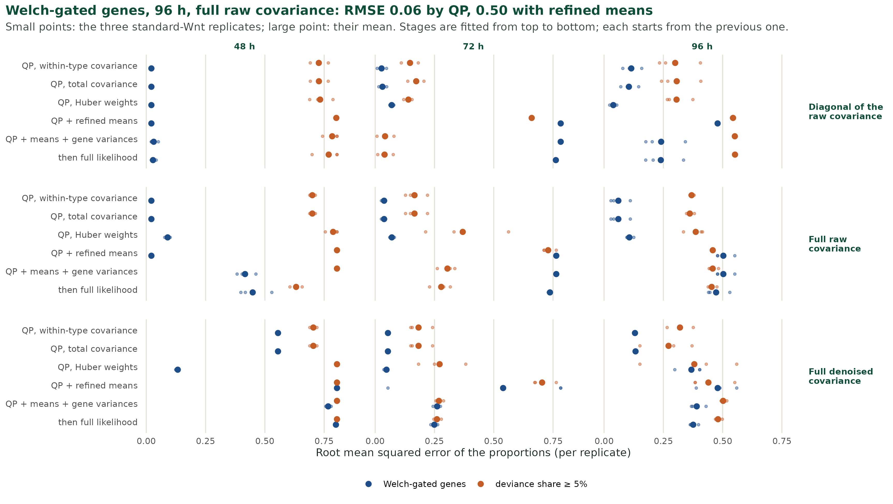
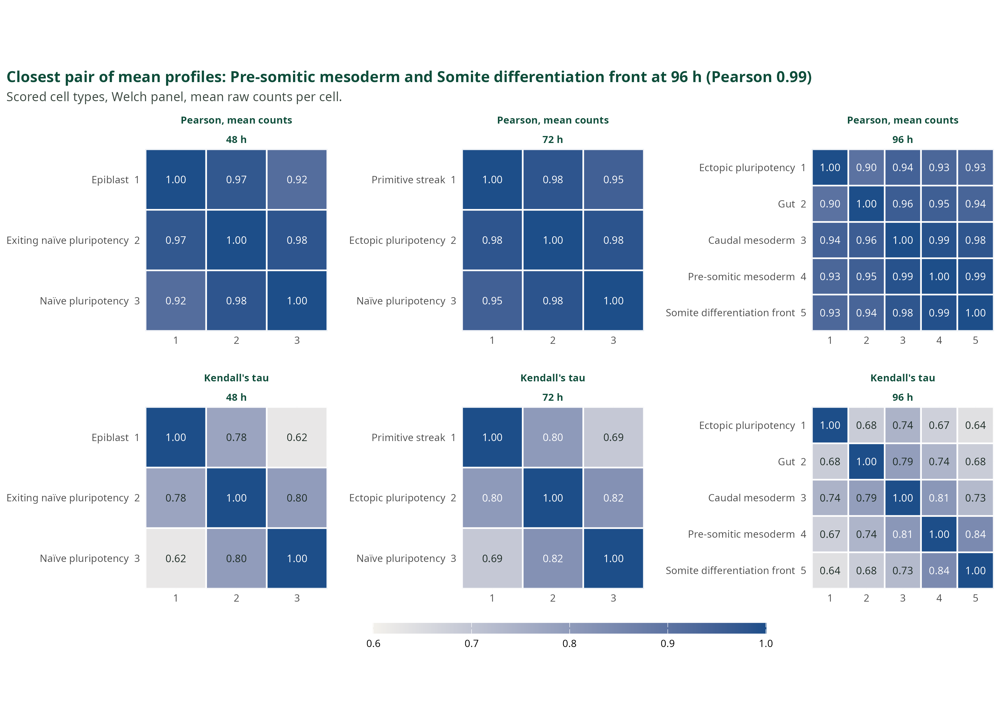
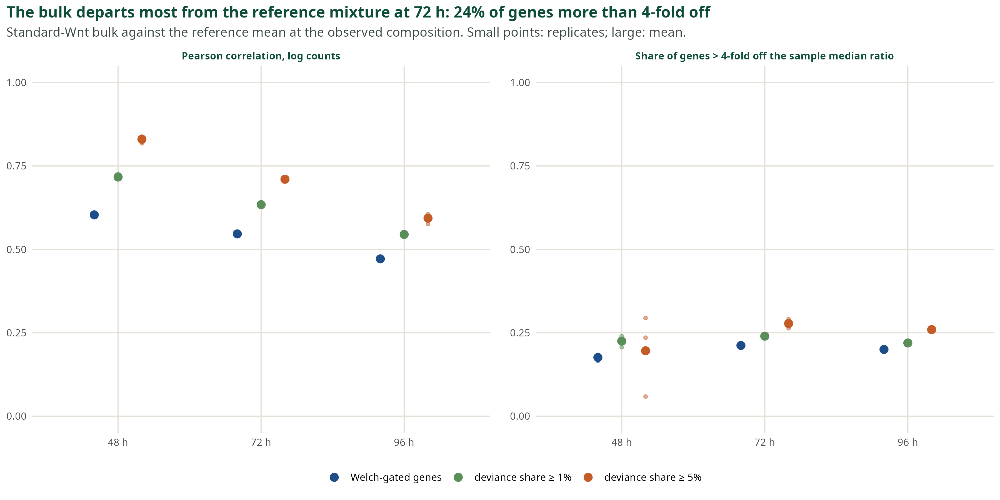
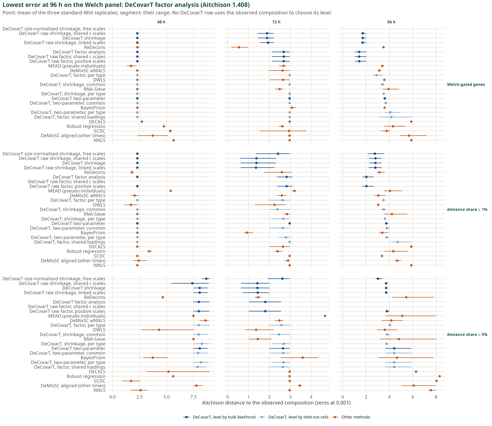
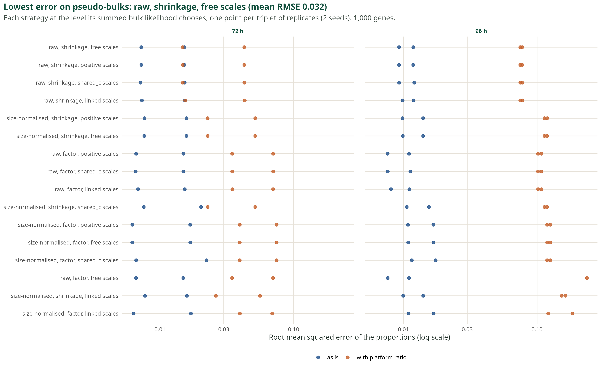

# Not run. y: one bulk sample (G genes, raw counts); mu: G x J mean
# signature; sigma_w: G x G x J within-type covariances; sigma_pop:
# G x G x J covariances for the population convolution. Same panel and
# reference for every method.
fit_newton <- DeCovarT::deconvolute_single_cell(
y, mu, sigma_w, optimiser = "newton"
)
fit_ml <- DeCovarT::deconvolute_ratios_Marquardt_Levenberg(
y, mu, sigma_pop
)
fit_nnls <- DeCovarT::deconvolute_ratios_nnls(y, mu)
fit_rlm <- DeCovarT::deconvolute_ratios_rlm(y, mu)
# Third-party R packages, recorded in renv.lock; check signatures first.
# BayesPrism::new.prism(); BayesPrism::run.prism(); BayesPrism::get.fraction()
# SCDC::SCDC_prop_ONE()
# DWLS::solveDampenedWLS(S, B)
# MEAD::MEAD()
# DeMixSC (aligned run; preprocessCore built with --disable-threading)
# Python: scripts/python/run_rnasieve.py, scripts/python/run_redeconv.py
# DECALS has no public code: deconvolute_decals() in
# R/04_01_stats_deconvolution.R.5.1 What is being compared
DeCovarT deconvolves bulk profiles with both a mean signature and a per-type covariance. Every method below uses the same gene panel and the same labelled single-cell reference; they differ in what they model beyond the mean. They estimate the proportion of each scored type, a share of cells. All runs are planned on GSE229386, at 48 h, 72 h and 96 h, for the standard Wnt pulse and the early pulse (Section 2.1). Each model is reviewed in 5.1, review; one line here says what it models and how it is called.
5.1.1 Second-generation, mean-based
- BayesPrism (Chu et al. 2022) — a multinomial likelihood on bulk counts with the single-cell reference as a prior on cell-type expression, updated by Gibbs sampling. R,
BayesPrism:new.prism(),run.prism(),get.fraction(). - SCDC (Dong et al. 2021) — weighted non-negative least squares with clipped gene weights, and an ensemble over several references. With one reference the ensemble step does nothing. R,
SCDC:SCDC_prop(), orSCDC_prop_ONE()for a one-subject reference. - DWLS (Tsoucas et al. 2019) TODO-cite: Tsoucas et al. 2019, dampened weighted least squares; p. to check — dampened weighted least squares, weights the inverse squared fitted mean, capped by a dampening constant. R,
DWLS:solveDampenedWLS(). - DeMixSC TODO-cite: Guo et al. 2025, DeMixSC, Genome Research 35:147–161; pp. 150, 157 — weighted non-negative least squares whose gene weights are rebuilt from the residuals, with a down-weighted set G_2 of genes that differ between a bulk and a single-nucleus library of one aliquot. Run here twice: the weights alone (
deconvolute_demixsc_wnnls(), G_2 empty) and the package aligned on pseudo-bulks of the other two times (deconvolute_demixsc_aligned(), Section 5.1.6). - DECALS (Cai et al. 2024, 6–7 of the author manuscript) — constrained least squares on relative abundances, with a sandwich variance that carries a covariance per type. The authors release no code; it is re-implemented in
deconvolute_decals()(R/04_01_stats_deconvolution.R).
TODO-cite: Chu et al. 2022 (BayesPrism, key chuCellTypeGeneExpression2022), p. to check, and Dong et al. 2021 (SCDC, key dongSCDCBulkGene2021), p. to check; both in DeCovarT inst/REFERENCES.bib, not in bibliography/REFERENCES.bib.
5.1.2 Single-cell likelihood strategy
- DeCovarT, profile Newton — the linear single-cell layer, with \boldsymbol{\Sigma}_{W,j} weighted by p_{ji} and both sample scales profiled out, maximised by trust-region Newton in ILR coordinates (2.1, profile Newton). R:
DeCovarT::deconvolute_single_cell(optimiser = "newton"). - DeCovarT, Levenberg–Marquardt — the released population convolution, covariance \sum_j p_{ji}^{2}\boldsymbol{\Sigma}_j, maximised by
marqLevAlgin ILR coordinates. With a one-specimen reference the quadratic slot is the wrong one (2.1, one replicate); the fit is the reference point for the released model. R:DeCovarT::deconvolute_ratios_Marquardt_Levenberg(). - RNA-Sieve (Erdmann-Pham et al. 2021, 1802–5) — genes independent; a central-limit Gaussian bulk whose variance is linear in the cell count, with the reference means as noisy regressors and Godambe (sandwich) intervals. Python,
rnasieve(songlab-cal/rna-sieve):model_from_raw_counts(), thenpredict(), called byscripts/python/run_rnasieve.py, which repairs the simplex-constrained update of the released package (Section 5.1.6). - MEAD (Xie and Wang 2023, 8–9 and 13 of arXiv:2202.06420v5) — an estimating equation corrected for reference measurement error, with gene–gene dependence in the sandwich variance and intervals for \boldsymbol{p}. R,
MEAD(DongyueXie/MEAD):MEAD(). - ReDeconv (Lu et al. 2025, 4 and 14) — keeps the transcriptome size S_j in the reference, corrects gene length on the bulk side only, and models the within-type variance through a central-limit law over cells. Code
jyyulab/redeconv, called byscripts/python/run_redeconv.py(ReDeconv()).
5.1.3 Gold-standard baselines
- NNLS — non-negative least squares on the mean signature, then projection on the simplex; homoscedastic, mean only. R:
DeCovarT::deconvolute_ratios_nnls(), which callsnnls::nnls(). - Robust linear regression (RLM) — Huber M-estimation of \boldsymbol{y}\approx\boldsymbol{\mu}\boldsymbol{p}, which down-weights outlying genes. R:
DeCovarT::deconvolute_ratios_rlm(), which callsMASS::rlm(method = "M").
5.1.4 Methods by paradigm
| Paradigm | Methods | Beyond the mean signature |
|---|---|---|
| Weighted least squares, diagonal weights | DWLS, SCDC, DeMixSC | one weight per gene |
| Probabilistic, reference as prior | BayesPrism | multinomial counts; updated cell-type profiles |
| Univariate likelihood, genes independent | RNA-Sieve, ReDeconv | a variance per gene and type |
| Multivariate estimating equation | MEAD, DECALS | gene–gene dependence in the sandwich variance only |
| Multivariate likelihood | DeCovarT | a covariance per type, in the estimating equation itself |
| Baseline | NNLS, robust regression | nothing |
5.1.5 What the DeCovarT fit estimates
| Factor | In the fits of this chapter |
|---|---|
| Mean scale c | Estimated, closed form at each \boldsymbol{p} (free scales); three constrained scale models in Section 5.2.5 |
| Variance scale \phi | Estimated, closed form at each \boldsymbol{p}; fitted values of 10^6 to 10^8 in the second pass |
| n and a separately | Not fitted, except through the linked model (Section 5.2.5); derived as \hat n=c^2/\phi (below one cell at 96 h in the second pass) and \hat a=\phi/c |
| Diagonal residual \boldsymbol{D} | Not used; the gene-wise scale d_g of the second pass did not converge in 13 of 18 chains |
| Gene-wise platform ratio b_g | Not used; it helped on the small panels and hurt on the Welch panel at 96 h (second pass) |
| Library-size normalisation | None for the mean; the size-normalised covariance of Section 4.1.1 is one input of the scale screen (Section 5.2.6) |
5.1.6 Comparators against their papers
Each comparator was checked against the paper that defines it, on the copies in deconvolution_models/ (text in .firecrawl/extract/). Locators: journal pages for RNA-Sieve, DeMixSC and ReDeconv; PDF pages of arXiv:2202.06420v5 for MEAD; for DECALS, pages of the PMC author manuscript and, as p. Sn, of its supplementary material. Table 5.3 sets the six estimators side by side, in the notation of this book: \boldsymbol{S}_W(\boldsymbol{p})=\sum_jp_j\boldsymbol{\Sigma}_j is the mixture covariance of DeCovarT, \boldsymbol{w} unnormalised weights, q_j a share of transcripts rather than of cells, \hat y_g the fitted bulk count of gene g, and G_2 the genes that DeMixSC finds to differ between bulk and single-cell libraries.
| DeCovarT | RNA-Sieve | MEAD | DeMixSC | ReDeconv | DECALS | |
|---|---|---|---|---|---|---|
| Estimating equation | Maximum likelihood of \boldsymbol{y}\sim\mathcal{N}(c\boldsymbol{\mu}\boldsymbol{p},\ \phi\boldsymbol{S}_W(\boldsymbol{p})), c and \phi profiled | Composite likelihood, Gaussian per gene, variance linear in the cell count, joint with the reference means (eqs. 5–11, pp. 1802–1803); Algorithm 1 (p. 1804) | Bias-corrected estimating equation (eq. 6, p. 9) | Weighted NNLS, iterated weights, genes of G_2 weighted by 10^{-6} (eq. 3, pp. 150, 157) | Gaussian likelihood per gene, variance \propto\sum_j w_j\sigma^2_{gj} (eq. 5, p. 14) | Constrained least squares on relative abundances (eq. 3, p. 6); equal, for large p, to the sum-to-one fit \tilde{\boldsymbol{q}}-(\boldsymbol{W}^\top\boldsymbol{W})^{-1}\boldsymbol{1}\{\boldsymbol{1}^\top(\boldsymbol{W}^\top\boldsymbol{W})^{-1}\boldsymbol{1}\}^{-1}(\boldsymbol{1}^\top\tilde{\boldsymbol{q}}-1) (Lemma S1, p. S23) |
| Gene–gene dependence | Full \boldsymbol{\Sigma}_j in the likelihood | None (p. 1803) | Dependency graph, in the sandwich only (pp. 10–11, 13) | None | None (eq. 5, p. 14) | \sum_j q_j^2\boldsymbol{\Sigma}_j on relative abundances q_j, in the interval only (eq. 5, p. 7; Theorem 1, p. S22) |
| Gene weights | \{\phi\boldsymbol{S}_W(\boldsymbol{p})\}^{-1} | Inverse bulk variance of each gene, which depends on \boldsymbol{p} (eq. 8, p. 1803) | Inverse shrunk reference variance (pp. 17–18) | 1/\{\hat y_g^2+(y_g-\hat y_g)^2+2\} (eq. 4, p. 157) | Inverse of that variance (p. 14) | None |
| Scales | c, \phi free (or one of the models of Section 5.2.5) | Cell count n_i estimated (p. 1803) | One free scale per bulk (p. 9) | Cell count free (p. 157) | One constant between bulk and summed cells (p. 14) | None; bulk and each reference profile in FPKM, divided by its total over all genes (eq. S1, p. S1) |
| Reference uncertainty | Moments treated as known | Means estimated jointly (eqs. 9–10, p. 1803) | Errors-in-variables correction (pp. 8–9) | Through the weights only (p. 157) | Plugged in (p. 13) | \boldsymbol{W} known (pp. 12, 17) |
| Constraints | Simplex (L-BFGS-B on \boldsymbol{w}\ge 0) | Simplex (Algorithm 1, p. 1804) | \boldsymbol{\beta}\ge0, then normalised (p. 10) | \boldsymbol{p}\ge0, then normalised (p. 157) | None stated (p. 14) | Simplex (eq. 3, p. 6); the theorem assumes every q_j>0, and for q_j=0 offers the sum-to-one fit without \boldsymbol{q}\ge0 (p. S22) |
| Intervals | Wald, delta method, clipped to [0,1] | Godambe (pp. 1804–1805) | Wald, sandwich (pp. 13–14) | None | None | Wald, sandwich \boldsymbol{U}\boldsymbol{D}\boldsymbol{U}^\top/p, no bias correction of \hat{\boldsymbol{q}} (Theorem 1, p. S22; proof pp. S25–S26) |
| As run here | deconvolute_single_cell(), raw-count moments, \boldsymbol{\Sigma}_j from build_sigma() |
rnasieve 0.1.4, update repaired, Godambe intervals | MEAD 1.0.2, 4 pseudo-individuals per type | Weights alone, and DeMixSC 0.9.0 aligned on the other times | redeconv 1.2.1, panel moments of raw counts | deconvolute_decals(), reference covariances, delta method to cell fractions |
Where our runs depart from the papers. Each departure is either forced by the data, a design choice of the benchmark (one panel for every method), a difference between the released package and its paper, or fixed here.
Forced by the data.
- MEAD needs several reference individuals (Xie and Wang 2023, 6). The reference has one cell line at 72 h and 96 h, so the cells of each type are split at random into four pseudo-individuals. Its weights then measure the precision of a mean of many cells, not donor variation.
- DeMixSC needs a bulk and a single-nucleus library of one aliquot TODO-cite: Guo et al. 2025, DeMixSC, Genome Research 35:147–161; pp. 149, 156. The aligned run takes, for time t, the standard-Wnt bulks of the two other times, each paired with a pseudo-bulk of its own time (leave one time out; nothing of time t enters the alignment). Its ComBat step assumes that benchmark and target bulks share a tissue environment TODO-cite: Guo et al. 2025, DeMixSC, Genome Research 35:147–161; p. 151; bulks of other developmental times do not, so the alignment also removes the expression changes between times that carry the composition.
- DECALS needs many bulks to estimate its type covariances (Cai et al. 2024, 3, 8–9 of the author manuscript). The paper regresses residual cross-products on squared proportions across bulks, with a finite-sample bias correction (eqs. 6–9, pp. 8–9; proof pp. S27–S28), then thresholds the correlations by SCAD with a cross-validated threshold and takes the nearest positive semi-definite matrix (pp. S1–S2). With three bulks per time,
deconvolute_decals()takes the reference covariance of each type, carried to the relative scale by the delta method, with one variance scale per sample; the bias correction, which acts on that regression only, has no counterpart.
Design.
- One gene panel for every method: RNA-Sieve’s off-simplex and outlier filters (Erdmann-Pham et al. 2021, 1803–4), MEAD’s gene filter, ReDeconv’s selection of about 100 signature genes per type by t-test, fold change and lowest coefficient of variation (Lu et al. 2025, 14) are off. RNA-Sieve runs without library normalisation, so its estimand stays a cell fraction.
- DeMixSC runs on the panel: about 63% of the panel genes (62–64% by time, in the check run) fall in the down-weighted set G_2, which a weight of 10^{-6} almost discards.
- DECALS works on panel shares of UMI counts, not on FPKM divided by the total over all genes (p. S1); its estimate is converted to cell fractions with the panel total per cell of each type, which the paper does not do. Intervals are clipped to [0,1], which the paper does not do either; at a face of the simplex the point estimate stays the constrained fit of eq. 3, as in Algorithm 1 (p. 9), and the variance is that of Theorem 1 (p. S22).
Package against paper.
MEAD_getXdivides every cell by its total, which the paper avoids (Xie and Wang 2023, PDF p. 35, Remark S2); the estimate is converted from transcript to cell shares. Not fixed: it would mean rewriting an unexported function.- DeMixSC computes its later weights in the weighted space, adds a fold-change cut-off and scales each bulk to 10^5, none of which the paper states; the unaligned run follows eq. 4 on raw counts.
- ReDeconv runs six reweighted, unconstrained least squares, then clips and rescales, where the paper maximises a likelihood (Lu et al. 2025, 14).
Fixed here.
- RNA-Sieve’s simplex-constrained update. In rnasieve 0.1.4 the update passes its constraints to
cp.Minimize()instead ofcp.Problem(). Under the pinned cvxpy 1.6.0 that raises aTypeError, which the package catches; the proportions then never move, andpredict()returns a clipped and rescaled weighted least squares, not the maximiser of Algorithm 1 (Erdmann-Pham et al. 2021, 1804).scripts/python/run_rnasieve.pyinstalls the corrected update (--releaserestores the released behaviour). - RNA-Sieve intervals. The runner now reports the Godambe intervals of the paper (Erdmann-Pham et al. 2021, 1805). With near-collinear types the package returns [0,1] when its averaged Hessian is ill-conditioned.
- DECALS re-implemented. No public code exists; the point estimate is the constrained least squares of the paper and the interval the sandwich of Theorem 1 (p. S22), mapped to cell fractions by the delta method. Checked against the supplement: \boldsymbol{U}, \boldsymbol{D} and the projection of Lemma S1 (p. S23) match. The fallback without reference covariances used p-K+1 degrees of freedom for \sigma_i^2; it now uses p-1, the starting value of Algorithm 1 (p. 9). The runs with reference covariances are unchanged.
output/deconvolution/benchmark_metrics.csv). A dash: the method is not in the file.
| Method | 48 h | 72 h | 96 h |
|---|---|---|---|
| DeMixSC weights, unaligned | 0.021 | 0.035 | 0.071 |
| DeMixSC aligned on the other times | 0.101 | 0.054 | 0.378 |
| DECALS | 0.269 | 0.053 | 0.479 |
| NNLS | 0.273 | 0.054 | 0.479 |
| RNA-Sieve | 0.021 | 0.094 | 0.135 |
DeMixSC aligned and DECALS on the real bulks. Alignment on the other times raises the mean RMSE on the Welch panel from 0.021 to 0.101 at 48 h, from 0.035 to 0.054 at 72 h and from 0.071 to 0.378 at 96 h (Table 5.4). In the check run of 17 November the aligned fit reached the 2,000-iteration limit on every sample at 48 h. DECALS stays close to NNLS, its unweighted counterpart, and most of its fits lie on a face of the simplex. With the reference covariances its intervals are close to [0,1]: the reference puts the cell-to-cell variance on highly expressed marker genes, which dominate an unweighted fit, and the residual-calibrated scale turns the bulk misfit into a large variance along them. On a face of the simplex the interval has no asymptotic justification: Theorem 1 assumes every proportion positive, and the supplement calls the law at a zero proportion “very complicated” (p. S22).
5.2 Statistical interpretation of the results
Two scenarios are kept apart, because they answer different questions. In the first, each method chooses its own genes, so a difference between two methods mixes the gene set, the input scale and the estimator. In the second, every method receives the same genes, so a difference comes from the estimator alone.
5.2.1 Scenario 1: each method selects its own genes
The earlier runs on these data (GastroDeconv2FateMap) called the methods through the omnideconv wrapper. Its benchmark states the policy: the authors “consulted the methods’ developers for guidance on optimal parameter settings and data type usage. In the absence of feedback, we ran the corresponding method with default parameters and considered counts and transcripts per million (TPM) as single-cell and bulk RNA-seq input data, respectively” (Dietrich et al. 2026, p. 5). Signature building and deconvolution are run as two steps for DWLS and SCDC, among others (p. 27). TODO-cite: Dietrich et al. 2026, omnideconv, Genome Biology 27:6, doi:10.1186/s13059-026-03955-w; pp. 5, 27; not in Zotero nor in bibliography/REFERENCES.bib.
Under that policy the three second-generation methods do not see the same genes, nor the same weights (Table 5.5).
| Method | Genes kept | Weight of a gene in the fit | Input scale in the omnideconv benchmark |
|---|---|---|---|
| DWLS | Markers only. MAST test of each type against the rest; genes with adjusted p below pval.cutoff and \log_2 fold change above diff.cutoff = 0.5; the top g per type by fold change, with g scanned from 50 to 200 and chosen to minimise the condition number of the signature (DWLS::buildSignatureMatrixMAST()) |
Inverse squared fitted value, capped by the dampening constant | pval_cutoff = 0.05, other defaults (p. 29); scale not reported in the DWLS paragraph |
| SCDC | No selection: every gene shared by the reference and the bulk | Iterated weights 1/(\nu+\hat\delta_g^{2}), with \hat\delta_g the residual of gene g (SCDC::SCDC_prop_ONE()); the weighted basis is used (weight.basis = TRUE) |
Single-cell counts, bulk TPM, one reference (p. 29) |
| BayesPrism | No marker step inside new.prism(); genes that dominate a bulk are dropped (outlier.cut = 0.01, outlier.fraction = 0.1). cleanup.genes() and select.marker() are optional steps left to the user |
None explicit: a multinomial likelihood, so a gene counts in proportion to its reads | Un-normalised counts for both inputs; cell types only (p. 27). Gene clean-up: not reported |
Hypothesis for the gastruloid reference (not tested here). DWLS is the only one of the three that prunes genes on the condition number of the mean signature. Labelled states at 48 h, 72 h and 96 h lie on a continuum, so neighbouring types have nearly collinear mean profiles. A rule that minimises the condition number then keeps the genes that separate a few dominant lineages and drops those that distinguish closely related types. SCDC and BayesPrism keep those genes, with a low weight or a low read share. That would explain estimates that agree between SCDC and BayesPrism and differ for DWLS (Figure 5.1).

Two cautions:
- The benchmark does not support the hypothesis directly. Dietrich et al. report DWLS among the most stable methods across annotation resolutions and the one with the least spillover between related immune types (pp. 8 and 13). They compare two DWLS signatures and find the better deconvolution with the lower condition number (p. 16). Their references are immune and tumour atlases with ground truth from flow cytometry, not a developmental continuum.
- Scenario 1 cannot isolate the cause. DWLS differs from the other two by its genes, its weights and its solver at once.
- No condition number was computed in this repository. The argument above is an argument, not a measurement.
5.2.2 Scenario 2: one gene panel for every method
The runs of this book give every method the same genes, the same scored cells and raw counts (scripts/04_01_stats_deconvolution.R):
- panels per time: the Welch panel and its subsets with a deviance share R^2_D\ge 5\% and, in the current run, R^2_D\ge 1\% (Section 3.3, Section 4.1.1);
- the solver of each method, called directly, without its own marker step:
DWLS::solveDampenedWLS()on the mean signature,SCDC::SCDC_prop_ONE(),BayesPrismwith its outlier filter off,rnasieve(repaired in the current run), the DeMixSC weighted NNLS and, in the current run, the aligned DeMixSC weights and DECALS (Section 5.1.6); - DeCovarT with four covariance inputs, with and without the gene-wise platform ratio, and two optimisers (second pass), then along the levels of each arm and under four scale models (current run, Section 5.2.3, Section 5.2.5).
A difference between methods is then a difference between estimators. A difference between panels, for one method, measures what the gene set contributes. If the hypothesis of scenario 1 holds, DWLS on the shared panel should move towards SCDC and BayesPrism.
The second pass (11 November 2026) adds to that list MEAD with four pseudo-individuals per type, ReDeconv on supplied moments, robust linear regression (DeCovarT::deconvolute_ratios_rlm()), and four diagnostic families written in R/04_02_stats_sieve_multivariate.R: a multivariate RNA-Sieve, DeCovarT at other shrinkage levels, DeCovarT with the between-type covariance term, and Firth-penalised DeCovarT.
Local symbols, used in this section only: \boldsymbol{w}=n\boldsymbol{p}, unnormalised weights for a bulk of n cells; \boldsymbol{S}_W(\boldsymbol{p})=\sum_j p_j\boldsymbol{\Sigma}_j, the mixture covariance of the DeCovarT single-cell model; \boldsymbol{S}_T(\boldsymbol{p}), the same with the between-type term (Equation 5.2); d_g, a gene-wise variance scale; \lambda, the shrinkage intensity of Section 4.4.1.
Results on a shared panel
These are the results of the second pass (11 November 2026), read from output/deconvolution/second_pass/; they are not rerun, and this section still reads them. Their code is in scripts/archives/second_pass_variants/. The current runs, which choose the shrinkage level without the observed composition, are in Section 5.2.3.
Status: point estimates, three standard-Wnt replicates per time, the observed composition being the share of scored cells in the single-cell annotation (not flow cytometry). No interval is reported. Each mean below is over three bulk replicates of one protocol.
output/deconvolution/second_pass/benchmark_metrics.csv). Bulk as is. DeCovarT rows: L-BFGS-B. Rows are ordered by the last column.
| Method | 48 h, $R^2_D\ge 5\%$ | 48 h, Welch | 72 h, $R^2_D\ge 5\%$ | 72 h, Welch | 96 h, $R^2_D\ge 5\%$ | 96 h, Welch |
|---|---|---|---|---|---|---|
| DeCovarT, raw covariance, λ = 0.5 | 0.769 | 0.021 | 0.036 | 0.043 | 0.310 | 0.034 |
| MEAD, pseudo-individuals | 0.795 | 0.093 | 0.115 | 0.141 | 0.282 | 0.048 |
| RNA-Sieve (Python) | 0.795 | 0.070 | 0.049 | 0.095 | 0.270 | 0.056 |
| RNA-Sieve (R), QP, full raw covariance | 0.700 | 0.021 | 0.166 | 0.038 | 0.362 | 0.060 |
| DeMixSC wNNLS | 0.731 | 0.021 | 0.045 | 0.035 | 0.291 | 0.071 |
| ReDeconv | 0.070 | 0.155 | 0.147 | 0.026 | 0.339 | 0.103 |
| RNA-Sieve (R), QP, diagonal | 0.728 | 0.021 | 0.173 | 0.031 | 0.306 | 0.105 |
| DWLS | 0.411 | 0.021 | 0.059 | 0.042 | 0.265 | 0.135 |
| BayesPrism | 0.576 | 0.021 | 0.066 | 0.047 | 0.301 | 0.162 |
| Robust regression | 0.270 | 0.073 | 0.054 | 0.090 | 0.412 | 0.220 |
| SCDC | 0.078 | 0.168 | 0.054 | 0.047 | 0.415 | 0.307 |
| DeCovarT, raw covariance, closed-form λ | 0.744 | 0.021 | 0.038 | 0.355 | 0.212 | 0.359 |
| DeCovarT, denoised covariance | 0.756 | 0.761 | 0.010 | 0.053 | 0.166 | 0.470 |
What Table 5.6 and Figure 5.2 show:
- At 96 h on the Welch panel, five estimators are within 0.03 to 0.07 of the observed composition: DeCovarT on the raw covariance shrunk at \lambda=0.5 (0.034), MEAD (0.048), RNA-Sieve (0.056), the quadratic programme of the multivariate RNA-Sieve with the full raw covariance (0.060), and the DeMixSC weights (0.071).
- DeCovarT with the closed-form shrinkage is at 0.36, and at 0.47 with the denoised covariance. The first-pass plug-ins, not the DeCovarT law, are what fails: the same law with another \lambda is the best row of the table.
- The small panel is worse for every comparator at 96 h (0.27 to 0.42) and at 48 h, where 17 genes carry the fit. The panel matters more than the method there.
- Pooled over the three times, the lowest RMSE on the Welch panel is 0.040 (DeCovarT, \lambda=0.5), then 0.053 (QP, full raw covariance) and 0.054 (DeMixSC weights); the best first-pass DeCovarT flavour was 0.14 (
benchmark_metrics_pooled.csv). - \lambda=0.5 was not chosen beforehand. It is the best of four levels scored against the same nine samples that define the error, so 0.034 is an optimistic value. A level chosen without the observed composition is needed before the comparison with MEAD or RNA-Sieve is fair; the full run makes it (Section 5.2.6.1).


The Aitchison distance (Figure 5.3, ledger M1) ranks differently, because it is driven by the rare types. An estimate of exactly zero for a type observed at 0.6% costs more than 0.1 of mass moved between two abundant types. At 96 h on the Welch panel the lowest mean distances are 1.69 (DeCovarT, \lambda=0.5), 1.87 (\lambda=0.75) and 2.59 (DeMixSC weights); MEAD is at 3.39 and RNA-Sieve at 3.82. With the floor at 0.01 instead of 0.001 the column aitchison_01 of the table gives the sensitivity.

Why the profile likelihood loses at 96 h
Assumptions made before the second pass, and what the data say
Seven explanations were on the table: five from the discussion of 11 November, two of mine. Each keeps its row whether or not the data went its way.
| Assumption | Source | Verdict | Evidence |
|---|---|---|---|
| Too many genes, or too few at 48 h | discussion | Partly | Not monotonic. At 96 h the large panel helps every comparator and hurts DeCovarT with the closed-form \lambda; 17 genes at 48 h fail for most methods unless the bulk is divided by b_g (Table 5.6). |
| The Gaussian law does not hold | discussion | True as a misfit, not the cause | \hat n<1 cell at 96 h; 18 to 28% of genes more than 4-fold off (Table 5.11). Yet the same Gaussian law with \lambda=0.5 gives the lowest error. |
| The covariance is not regularised enough | discussion | Supported | RMSE 0.36 → 0.034 at 96 h on the Welch panel when \lambda goes from the closed form to 0.5 (Figure 5.6). I had ranked this last in my first note of 11 November; that ranking was wrong. |
| ILR optimiser against quadratic programming | discussion | Not the optimiser; yes for the estimating equation | DeCovarT’s estimate has a higher likelihood than the observed composition in all 36 sample × panel × covariance cells (Table 5.8). A QP on the same plug-ins gives 0.060 (Figure 5.5). |
| Bulk means and covariances differ from the single-cell plug-ins | discussion | The fact is supported, the remedy tried is not | Agreement in Table 5.11. Refining the means from one bulk raises the RMSE to 0.50. |
| ILR chart traps Newton near a face | mine | Explains the convergence code only | Newton and L-BFGS-B share the same accuracy problem (Figure 5.2). |
| The log-determinant pulls the estimate to a vertex | mine, from one sample | Holds for the denoised covariance on the Welch panel only | Table 5.8: the gain is in the log-determinant at 72 h and 96 h with the denoised covariance, in the quadratic term with the raw one. |
The optimiser reaches a better likelihood than the observed composition
The profile log-likelihood of DeCovarT::deconvolute_single_cell() at a composition \boldsymbol{p} is, up to a constant (ledger P1),
\ell(\boldsymbol{p}) =-\frac{G}{2}\log\hat\phi(\boldsymbol{p}) -\frac{1}{2}\log\det\boldsymbol{S}_W(\boldsymbol{p}), \qquad \hat\phi(\boldsymbol{p})=\frac{1}{G}\, \boldsymbol{r}^{\top}\boldsymbol{S}_W(\boldsymbol{p})^{-1}\boldsymbol{r}, \quad \boldsymbol{r}=\boldsymbol{y}-\hat c\,\boldsymbol{\mu}\boldsymbol{p}. \tag{5.1}
scripts/archives/second_pass_variants/04_02_stats_likelihood_terms.R evaluates the two terms at the observed composition and at the DeCovarT estimate, for the nine standard-Wnt samples.
output/deconvolution/second_pass/likelihood_terms.csv). ‘Smallest gain’: lowest of the three replicates; a negative value would mean the optimiser stopped below the observed composition.
| Covariance | Time | Genes | Gain in $\ell$ | of which quadratic term | of which log-determinant | Smallest gain |
|---|---|---|---|---|---|---|
| denoised | 48 h | 17 | 3 | 22 | -19 | 1 |
| denoised | 72 h | 140 | 0 | 2 | -2 | 0 |
| denoised | 96 h | 635 | 27 | 152 | -124 | 22 |
| denoised | 48 h | 1,417 | 22 | 722 | -700 | 13 |
| denoised | 72 h | 3,420 | 915 | -411 | 1,326 | 908 |
| denoised | 96 h | 5,821 | 1,133 | 74 | 1,059 | 1,100 |
| raw | 48 h | 17 | 2 | 17 | -16 | 1 |
| raw | 72 h | 140 | 3 | -12 | 15 | 1 |
| raw | 96 h | 635 | 30 | 25 | 5 | 16 |
| raw | 48 h | 1,417 | 4 | -5 | 9 | 2 |
| raw | 72 h | 3,420 | 206 | 448 | -242 | 201 |
| raw | 96 h | 5,821 | 1,098 | 1,664 | -566 | 1,092 |
- No optimiser failure. The gain is never negative: the estimate is a better maximum of the objective than the observed composition, by about 1,100 units at 96 h on the Welch panel. L-BFGS-B works on non-negative weights, not on ILR coordinates.
- Which term carries the gain depends on the covariance. With the denoised covariance on the Welch panel at 72 h and 96 h it is the log-determinant; with the raw covariance at 96 h it is the quadratic term, and the log-determinant goes the other way. My first reading, from one sample, generalised the denoised case too far.
- Why the log-determinant can matter at all. \log\det is concave on positive definite matrices (ledger L1, numeric). When two covariances have complementary near-null directions of size \varepsilon, mixing them raises \log\det by about -\log\varepsilon (ledger L2). The denoised covariance of a type with C_j cells has rank at most C_j-1 before shrinkage (1,382 of 1,417 eigenvalues clipped to zero for the 36 naïve cells at 48 h, first pass), so a vertex has a much smaller determinant than a mixture.
- Why profiling makes both terms comparable. The quadratic form enters Equation 5.1 through its logarithm. Its gradient is the fixed-scale gradient divided by \hat\phi (ledger P3), and \hat\phi is 10^6 to 10^8 here. A model with one scale for mean and variance, as RNA-Sieve, keeps the quadratic form at full weight.
Same plug-ins, quadratic programme instead of likelihood
The multivariate RNA-Sieve (fit_sieve_chain()) writes the bulk as \boldsymbol{y}\sim\mathcal{N}\bigl(\boldsymbol{\mu}\boldsymbol{w},\,
n\,\boldsymbol{S}_T(\boldsymbol{p})\bigr), one n for the mean and the covariance. Its covariance is that of a bulk whose cell-type counts are multinomial (ledger C1, C2):
\boldsymbol{S}_T(\boldsymbol{p}) =\sum_j p_j\bigl(\boldsymbol{\Sigma}_j +\boldsymbol{\mu}_{\cdot j}\boldsymbol{\mu}_{\cdot j}^{\top}\bigr) -(\boldsymbol{\mu}\boldsymbol{p})(\boldsymbol{\mu}\boldsymbol{p})^{\top} =\boldsymbol{S}_W(\boldsymbol{p}) +\sum_j p_j(\boldsymbol{\mu}_{\cdot j}-\boldsymbol{\mu}\boldsymbol{p}) (\boldsymbol{\mu}_{\cdot j}-\boldsymbol{\mu}\boldsymbol{p})^{\top}. \tag{5.2}
The second term is the covariance of the type a random cell belongs to. It does not correlate the cell types with one another; it has rank at most J-1. DeCovarT’s \boldsymbol{S}_W omits it, which holds the number of cells of each type fixed. RNA-Sieve states the diagonal of Equation 5.2; the matrix form is derived here.
Six stages are stored for each of three covariance inputs (diagonal of the raw covariance, full raw, full denoised):
qp_within: freeze the covariance, solve \min_{\boldsymbol{w}\ge 0}(\boldsymbol{y}-\boldsymbol{\mu}\boldsymbol{w})^{\top} \boldsymbol{U}^{-1}(\boldsymbol{y}-\boldsymbol{\mu}\boldsymbol{w}) withquadprog::solve.QP(), update the covariance, repeat; then \hat{\boldsymbol{p}}=\boldsymbol{w}/\sum_j w_j. Within-type covariance only.qp: the same with \boldsymbol{S}_T.qp_huber:qpwith Huber weights on the whitened residuals.qp_means:qpalternated with the closed-form refinement of the means, per bulk (ledger S1), \boldsymbol{m}_j=\boldsymbol{\mu}_{\cdot j} +(w_j/C_j)\,\boldsymbol{\Sigma}_j(\boldsymbol{U}+\boldsymbol{Q})^{-1} (\boldsymbol{y}-\boldsymbol{\mu}\boldsymbol{w}), \boldsymbol{Q}=\sum_j(w_j^{2}/C_j)\boldsymbol{\Sigma}_j.qp_means_var: adds d_g, the mean over the six bulks of a time of the squared residual over the model variance (the diagonal of the DECALS moment regression; correlations kept from the reference).full_lik: from that state, the full likelihood with its log-determinant, maximised in \boldsymbol{w}\ge 0.

- The estimating equation is what differs. On the Welch panel at 96 h, with the full raw covariance, the QP gives 0.060 and its iteration converges for the three replicates. DeCovarT with the same covariance gives 0.36. The QP uses the covariance as a weight only; the likelihood also reads the composition from it.
- The between-type term changes little:
qp_withinandqphave the same RMSE to the third decimal in 10 of the 18 cells of Figure 5.5, and differ by at most 0.05. - Refining the means from one bulk fails. The RMSE rises to 0.50 at 96 h and to 0.76 at 72 h on the Welch panel; the refined profiles move by 20 to 100% of their norm (mean over the six bulks of a chain). One bulk has G values for JG means, so the bulk is fitted by the profiles instead of the proportions. RNA-Sieve shares the refined means across bulks; that version was not written here, and six bulks with two protocols would still be few for three to five profiles.
- The gene-wise variance scale has no consistent effect (better at 72 h on the small panel, worse at 96 h on the Welch panel), and the alternation did not converge in 13 of 18 chains.
- The full likelihood undoes the QP on the Welch panel with the full raw covariance (0.060 → 0.47 at 96 h, starting from refined means).
- The denoised covariance alone is unstable: its QP iteration does not converge at 96 h on either panel. It is a fixed point, not a descent, and a nearly singular weight matrix makes it cycle.
- On the small panel at 96 h the QP is worse than DeCovarT (0.36 against 0.21) and does not converge. The result above is a result about the Welch panel.
The released Python RNA-Sieve behaved as a weighted least squares in the second pass. In rnasieve 0.1.4 the proportion update passes its simplex constraints to cp.Minimize() instead of cp.Problem(); under the pinned cvxpy 1.6.0 that call raises a TypeError, which the package catches and answers with the previous proportions (checked on a toy). Lines 6 and 12 of Algorithm 1 (Erdmann-Pham et al. 2021, 1804) then never move the composition, and predict() returns a clipped and rescaled weighted least squares. The RNA-Sieve rows of this section are that released estimator. scripts/python/run_rnasieve.py now installs the corrected update and reports the Godambe intervals (Section 5.1.6); the current run (Section 5.2.3) uses the repaired estimator.
Shrinkage level of the raw covariance
rescale_shrinkage() moves the raw covariance to another \lambda by multiplying its off-diagonal terms by (1-\lambda)/(1-\hat\lambda^{\ast}_j) (ledger S2); variances are untouched.

- Welch panel, 96 h: RMSE 0.36 (closed form), 0.19 (0.25), 0.034 (0.5), 0.067 (0.75), 0.16 (1). The optimum is interior: correlations help, at half their sample value.
- Welch panel, 72 h: 0.36 → 0.033 at \lambda=0.25.
- Small panels: no gain (0.21 → 0.28 to 0.32 at 96 h).
- Reading. The closed-form \lambda minimises the Frobenius risk of the covariance, type by type. Abundant types get \lambda\approx 0.02 and rare ones 0.6: the weight matrices of the types are then of very different quality, and the likelihood reads that difference as signal. One common, larger \lambda removes it. This is an interpretation; the sweep does not separate “larger” from “common”.
Collinear mean profiles: the error at 96 h is a split inside one lineage

At 96 h, pre-somitic mesoderm, caudal mesoderm and the somite differentiation front have Pearson correlations of 0.98 to 0.99 and a cosine similarity up to 0.994 (Figure 5.7, profile_correlation.csv). Kendall’s tau is lower (0.73 to 0.84): the profiles differ in rank on many genes of low count, which carry little weight in a fit on raw counts.
Before the second pass, one sample (96h_CTL_rep1, Welch panel) was fitted by hand. These are scratch checks on one sample, not benchmark rows; the quadratic programmes minimise a generalised least squares with the covariance held fixed.
| Estimator | Caudal mesoderm | Pre-somitic mesoderm | Gut |
|---|---|---|---|
| Observed | 0.215 | 0.727 | 0.028 |
| Unweighted NNLS | 1.000 | 0.000 | 0.000 |
| Quadratic programme, diagonal of the raw covariance | 0.408 | 0.590 | 0.002 |
| Quadratic programme, full raw covariance | 0.219 | 0.781 | 0.000 |
| Quadratic programme, full denoised covariance | 0.000 | 0.740 | 0.012 |
| DeCovarT, raw covariance, closed-form \lambda | 0.066 | 0.224 | 0.700 |
| DeCovarT, denoised covariance | 0.983 | 0.009 | 0.002 |
- The means alone do not separate the lineage. Unweighted NNLS puts everything on caudal mesoderm, observed at 0.22.
- The covariance does, on the large panel only. The Mahalanobis separation of caudal from pre-somitic mesoderm is 3.5 times the diagonal one on the Welch panel and 0.22 times on the 635-gene panel.
output/deconvolution/lineage_collapsed_metrics.csv).
| Method | RMSE, five types | RMSE, lineage summed | Pre-somitic share of the lineage |
|---|---|---|---|
| DeCovarT raw shrinkage, shared c scales | 0.033 | 0.014 | 0.73 |
| DeCovarT shrinkage | 0.034 | 0.014 | 0.73 |
| DeCovarT raw shrinkage, linked scales | 0.034 | 0.013 | 0.73 |
| DeCovarT size-normalised shrinkage, free scales | 0.035 | 0.017 | 0.74 |
| MEAD (pseudo-individuals) | 0.048 | 0.037 | 0.71 |
| DeMixSC wNNLS | 0.071 | 0.030 | 0.87 |
| ReDeconv | 0.103 | 0.034 | 0.60 |
| DWLS | 0.135 | 0.033 | 0.55 |
| RNA-Sieve | 0.135 | 0.037 | 0.54 |
| DeCovarT two-parameter | 0.150 | 0.031 | 0.52 |
| BayesPrism | 0.162 | 0.036 | 0.50 |
| DeCovarT factor analysis | 0.164 | 0.037 | 0.51 |
| DeCovarT raw factor, positive scales | 0.165 | 0.037 | 0.50 |
| RLM | 0.220 | 0.037 | 0.37 |
| SCDC | 0.307 | 0.027 | 0.26 |
| DeMixSC aligned (other times) | 0.378 | 0.118 | 0.06 |
| DECALS | 0.479 | 0.037 | 0.00 |
| NNLS | 0.479 | 0.037 | 0.00 |
| Observed | — | — | 0.77 |
- Once the lineage is summed, 17 of the 18 rows are at 0.04 or below on the Welch panel; the exception is DeMixSC aligned (other times) (0.118). Summing removes 0.14 of RMSE on average. Over the three panels, 50 of 53 method × panel means are at 0.04 or below after summing (Figure 5.8).
- The methods differ mostly by the split. The observed pre-somitic share of the lineage is 0.77; the four shrinkage strategies of DeCovarT give 0.73 to 0.74, MEAD 0.71, DWLS 0.55, RNA-Sieve 0.54, SCDC 0.26, and NNLS and DECALS put the whole lineage on caudal mesoderm (0.00).
- The small panel loses the split, not the lineage. On the R^2_D\ge 5\% panel the five-part error is higher than on the Welch panel for 15 of the 17 methods fitted on both, while the summed error stays small (Figure 5.8). On the R^2_D\ge 1\% panel the lowest five-part error is DeMixSC wNNLS (0.030). Reading (not tested): the genes that separate the three types are in the Welch panel and mostly absent from its high-deviance subset.

How far the bulk is from the reference
output/deconvolution/bulk_reference_agreement.csv). Correlations of \log(1+y_g) with \log(1+(\boldsymbol{\mu}\boldsymbol{p})_g); share of genes whose bulk-to-reference ratio is more than 4-fold from the median ratio of the sample.
| Time | Genes | Pearson, log scale | Spearman | Genes more than 4-fold off |
|---|---|---|---|---|
| 48 h | 17 | 0.83 | 0.78 | 20% |
| 48 h | 151 | 0.72 | 0.70 | 23% |
| 48 h | 1,417 | 0.60 | 0.63 | 18% |
| 72 h | 140 | 0.70 | 0.77 | 28% |
| 72 h | 864 | 0.65 | 0.70 | 22% |
| 72 h | 3,420 | 0.54 | 0.57 | 21% |
| 96 h | 635 | 0.59 | 0.58 | 26% |
| 96 h | 2,856 | 0.55 | 0.58 | 22% |
| 96 h | 5,821 | 0.48 | 0.53 | 20% |

The correlation between a bulk and its own reference mixture ranges from 0.83 (48 h, 17 genes) to 0.48 (96 h, 5,821 genes); it is lowest on the Welch panel at every time, and 18% to 28% of the genes are more than 4-fold off (Table 5.11, Figure 5.9). The fitted DeCovarT scales say the same: the variance scale implies fewer than one cell per bulk at 96 h. The residual is a difference between platforms, gene by gene, not the sampling of cells. The three-layer law of the DeCovarT vignette, \sum_j p_j^{2}\boldsymbol{\Sigma}_{B,j}+n^{-1}\sum_j p_j\boldsymbol{\Sigma}_{W,j} +\boldsymbol{\Sigma}_{\mathrm{obs}} (ledger Q1), has two layers that do not shrink with n; the fits here use the middle one only.
Two variants that did not change the picture
- Between-type covariance in the DeCovarT likelihood (
fit_decovart_total(), Equation 5.2 with free c and \phi). With the term switched off the function reproduces the package fit. With it, the RMSE at 96 h on the Welch panel is 0.30 against 0.36 (raw) and 0.47 against 0.47 (denoised); across the 24 cells of the design it is lower in some and higher in others, with no pattern. - Firth penalty (
fit_decovart_firth(), from two interior starts). The penalty is half the log-determinant of the information of the J-1 ILR coordinates, a few units (median 4 on the Welch panel at 48 h and 72 h), against likelihood differences of hundreds. The estimates equal the unpenalised ones to the third decimal on the Welch panel at 72 h; on the 17-gene panel at 48 h the RMSE goes from 0.74 to 0.57. The information is singular on a face (ledger F1), so the penalty keeps the estimate interior; it does not act on the covariance log-determinant of Equation 5.1. At 96 h on the Welch panel one Firth fit is projected at about 8 h (one Hessian takes 70 s); the three standard-Wnt samples are running for the raw and denoised covariance, bulk as is, and are not in the figures yet.
Limits
- One reference per time, from one cell line at 72 h and 96 h; three bulk replicates per protocol; the observed composition is the share of scored cells, which leaves out unscored cells present in the bulk.
- MEAD ran on pseudo-individuals, so its gene weights measure the precision of the reference means, not donor variation.
- Robust regression returned a negative coefficient for every sample; the reported estimate is the clipped one.
- Every “best” value above was selected on the samples that score it.
- The equations of this section are checked in
verification/ledger.json(Table 5.12); the repository has no Lean project, and no shared notation file exists yet.
python3 verification/run_all.py, SymPy 1.14.0). ‘exact’: the difference simplifies to zero; ‘rational-sampling’: zero in exact rational arithmetic at 25 points, not a proof; ‘numeric’: mpmath at 40 digits, not a proof; ‘series’: expansion to the stated order.
| Id | Claim | Kind | Status |
|---|---|---|---|
| R1 | (1 - lambda) M + lambda I has the eigenvectors of M and eigenvalues (1 - lambda) ell + lambda | exact | pass |
| R2 | With M of rank r in p dimensions, det K = prod(e_i) lambda^(p - r) and z' K^-1 z = sum (v_i' z)^2 / e_i + (|z|^2 - sum (v_i' z)^2) / lambda | exact | pass |
| R3 | (B B' + Psi)^-1 = Psi^-1 - Psi^-1 B (I + B' Psi^-1 B)^-1 B' Psi^-1 and det(B B' + Psi) = det(Psi) det(I + B' Psi^-1 B) | exact | pass |
| R4 | Restricted log-likelihood -1/2 [(n - p) log phi + log det V + log det(X' V^-1 X) + r' V^-1 r / phi], maximised at phi = r' V^-1 r / (n - p) | exact | pass |
| R5 | Linked scales phi = a c, a fixed: the score in c does not contain N; its root c = (-G a + sqrt(G^2 a^2 + 4 D Q)) / (2 D) is positive and a maximum | exact | pass |
| C1 | Bulk covariance with multinomial cell-type counts is n S_T(p) | exact | pass |
| C2 | S_T(p) - sum_j p_j Sigma_j = sum_j p_j (m_j - Mp)(m_j - Mp)'; rank <= J - 1 | exact | pass |
| C3 | det(T - mm') = det(T)(1 - m'T^-1 m) and the matching inverse | exact | pass |
| L1 | log det(sum_j p_j Sigma_j) >= sum_j p_j log det Sigma_j | numeric | pass |
| L2 | For A = diag(1, eps), B = diag(eps, 1): the gap of L1 is -log(eps) + log(p(1 - p)) + O(eps) | series | pass |
| M1 | Aitchison distance (clr) equals the Euclidean distance of ILR coordinates in the Helmert basis | exact | pass |
| M2 | p_j = (q_j / s_j) / sum_k (q_k / s_k) inverts q_j = p_j s_j / sum_k p_k s_k | exact | pass |
| F1 | dp/dz = (diag p - pp')V; det(J'J) vanishes on every face, so the ILR information J' I_p J is singular there | exact | pass |
| Q1 | Cov = sum_j p_j^2 Sigma_B,j + (1/n) sum_j p_j Sigma_W,j for the replicate-plus-cell hierarchy | exact | pass |
| P1 | c = m'Wy / m'Wm and phi = r'Wr / G are the stationary scales; profile log-likelihood = -(G/2) log phi - (1/2) log det S - G/2 | exact | pass |
| P2 | Score in p_k: (c/phi) m_k'a + a'(dS_k)a / (2 phi) - tr(S^-1 dS_k) / 2, a = S^-1 r; and its tied-scale form | rational-sampling | pass |
| P3 | d/dtheta[-(G/2) log q] equals d/dtheta[-q / (2 phi)] at phi = q / G: profiling divides the gradient of the quadratic form by phi-hat | exact | pass |
| S1 | m_j = mu_j + (w_j / C_j) Sigma_j (U + Q)^-1 (y - mu w) is the stationary point of the mean stage | exact | pass |
| S2 | Multiplying the off-diagonal terms of the lambda1-shrunk covariance by (1 - lambda2) / (1 - lambda1) gives the lambda2-shrunk covariance | exact | pass |
| TS1 | With Var D = v / n, z^2 scales linearly in n, so n_eff = a * qchisq(0.5, 1) / median z^2(a) | exact | pass |
| TS2 | Under c = a n and phi = a^2 n, the cell count is c^2 / phi | exact | pass |
| TS3 | Var r = W^{-1} implies Var(W r) = W and Var z_g = 1 for z_g = (W r)_g / sqrt(W_gg) | exact | pass |
| TS4 | (W r)_g / W_gg = y_g - E(y_g | y_-g) and 1 / W_gg = Var(y_g | y_-g) (Schur complement) | exact | pass |
| TS5 | W_gg >= 1 / Sigma_gg (equality iff Sigma_{g,-g} = 0); a one-gene shift of k SDs moves z_cond by k sqrt(Sigma_gg W_gg) >= k | exact | pass |
| TS6 | Var(sum_{g in M} z_g) = 1' C_M 1 with C the correlation matrix of W | exact | pass |
| TS7 | Shared shift of k SDs on two genes of correlation rho > 0: per-gene z_cond moves by k sqrt((1 - rho)/(1 + rho)) < k; both module sums move by sqrt(2) k / sqrt(1 + rho) | rational-sampling | pass |
5.2.3 Choosing the shrinkage level without the observed composition
Design (16 November 2026). The DeCovarT model is now fixed: the single-cell law of Equation 5.1, raw-count covariances, both scales profiled, L-BFGS-B, bulk as is. Only the regularisation of the within-type correlation moves (build_sigma(), R/03_01_stats_covariance_estimation.R; arms in Section 4.2), always by grid search. Two selectors never read the observed composition:
- Bulk likelihood. For each time, protocol and gene panel, the level with the highest profile log-likelihood (Equation 5.1), summed over the three replicates of that protocol. The restricted version integrates out the J mean coefficients (ledger R4). The early-Wnt bulks never inform the standard ones.
- Held-out cells. Each type’s level is chosen on the held-out log-score of cells (Section 4.3); the bulk is never read.
The composition error is computed afterwards and plays no part in either choice. Shrinkage was swept over 8 levels, the two-parameter arm over a grid of 9 pairs, factor analysis over 6 ranks (scripts/04_01_stats_deconvolution.R, stage sweep; 3,186 fits in sweep_diagnostics.csv).
output/deconvolution/lambda_selection.csv.
| Panel | Time | $\lambda$ chosen | RMSE there | Lowest RMSE (at $\lambda$) | Cell CV, per type | Cell CV, common |
|---|---|---|---|---|---|---|
| Welch | 48 h | 0.1 | 0.021 | 0.021 (0.1) | 0.021 | 0.021 |
| Welch | 72 h | 0.5 | 0.043 | 0.026 (0.1) | 0.054 | 0.054 |
| Welch | 96 h | 0.5 | 0.034 | 0.033 (0.375) | 0.100 | 0.140 |
| R^2_D\ge 1\% | 48 h | 0.1 | 0.021 | 0.021 (0.1) | 0.021 | 0.021 |
| R^2_D\ge 1\% | 72 h | 0.25 | 0.036 | 0.034 (0.1) | 0.052 | 0.039 |
| R^2_D\ge 1\% | 96 h | 0.5 | 0.136 | 0.076 (0.25) | 0.205 | 0.263 |
| R^2_D\ge 5\% | 48 h | 1 | 0.765 | 0.765 (0.9) | 0.752 | 0.767 |
| R^2_D\ge 5\% | 72 h | 0.1 | 0.034 | 0.033 (0.25) | 0.041 | 0.041 |
| R^2_D\ge 5\% | 96 h | 0.25 | 0.281 | 0.232 (0.1) | 0.301 | 0.320 |

- The bulk likelihood recovers the level read on the composition. On the Welch panel it chooses 0.1 at 48 h, 0.5 at 72 h and 0.5 at 96 h. At 72 h and 96 h the maximum is interior: the neighbouring levels are 28 to 163 units lower. At 96 h the error there is 0.034, against 0.033 at the best level of the grid (0.375).
- Two limits. At 48 h the choice is 0.1, the edge of the grid, with an error of 0.021. At 72 h the likelihood prefers 0.5 (RMSE 0.043) where 0.1 gives 0.026.
- The cell-wise levels are too strong for the bulk. Held-out cells choose 0.84 to 0.97 for every type but the 48 h epiblast (0.47). At 96 h these levels give 0.100 (per type) and 0.140 (common).
- The likelihood ranks levels within an arm, not arms. At 96 h the two-parameter arm has a higher bulk likelihood than the best shrinkage level (+103 units) and 4.47 times its error (0.150).
- Small panels. Along the shrinkage levels the 17-gene panel at 48 h stays at 0.765 to 0.776 and the 635-gene panel at 96 h at 0.232 to 0.320. At 72 h the 140-gene panel gives 0.033 to 0.048.


Factor arm. A per-type factor model at rank 5 gives an error of 0.014 at 48 h and 0.010 at 72 h on the Welch panel, but 0.154 to 0.182 at 96 h, where the bulk likelihood chooses rank 12. 35 of the 3,186 fits stop with a non-positive mean scale, all with a factor covariance (Section 5.2.4). On the raw counts the first factor loading is the cell size axis: at 48 h it has a cosine of 0.99 with the standardised mean profile of the epiblast, so \boldsymbol{\Sigma}_j\approx\nu\,\boldsymbol{\mu}_{\cdot j}\boldsymbol{\mu}_{\cdot j}^{\top}+\boldsymbol{\Delta}_j. Whitening by that covariance divides the weight of the mean direction by about 48 (the squared whitened norm of the mixture mean falls from 1,735 with the variances alone to 36), and the sign of the generalised least-squares scale \hat c is then set by the part of the bulk residual orthogonal to it. This is a reading of three measurements on one slot; the other failed slots were not examined.
Pseudo-bulks with a known composition (scripts/04_03_stats_selection_checks.R). The reference moments come from 80% of the cells of each type; pseudo-bulks of 500 cells are drawn from the other 20% at the observed composition, at a uniform one and at one draw of a flat Dirichlet. Each is fitted as is, and multiplied gene by gene by the bulk-to-reference ratio of tier (iii).
output/deconvolution/lambda_checks.csv.
| Time | Composition | Pseudo-bulk | $\lambda$ chosen | RMSE there | Lowest RMSE (at $\lambda$) |
|---|---|---|---|---|---|
| 72 h | observed | as is | 0.9 | 0.013 | 0.013 (0.375) |
| 72 h | uniform | as is | 0.9 | 0.031 | 0.015 (1) |
| 72 h | random | as is | 0.9 | 0.024 | 0.022 (0.25) |
| 72 h | observed | with platform ratio | 0.5 | 0.034 | 0.031 (0.25) |
| 72 h | uniform | with platform ratio | 0.5 | 0.153 | 0.099 (0.9) |
| 72 h | random | with platform ratio | 0.5 | 0.158 | 0.070 (0.9) |
| 96 h | observed | as is | 0.9 | 0.009 | 0.008 (0.75) |
| 96 h | uniform | as is | 0.9 | 0.139 | 0.119 (1) |
| 96 h | random | as is | 0.9 | 0.256 | 0.133 (0.25) |
| 96 h | observed | with platform ratio | 0.625 | 0.108 | 0.102 (0.375) |
| 96 h | uniform | with platform ratio | 0.625 | 0.211 | 0.200 (0.5) |
| 96 h | random | with platform ratio | 0.625 | 0.332 | 0.089 (0.25) |
- The platform shift moves the chosen level. As is, the likelihood chooses 0.9 at 72 h and 0.9 at 96 h; with the gene-wise ratio it chooses 0.5 at 72 h and 0.625 at 96 h, close to what the real bulks choose. The level is answering the bulk–reference misfit, not the sampling error of the reference.
- At the observed composition the rule is close to the best level with the ratio (72 h: 0.034 against 0.031; 96 h: 0.108 against 0.102). At the two other compositions it is not: at 96 h the Dirichlet draw with the ratio gives 0.332 at the chosen level where 0.25 gives 0.089.
- The shift itself is the larger error. At 96 h and the observed composition the best level gives 0.008 as is and 0.102 with the ratio.
- The check injects the same ratio one would divide by, so it does not test whether dividing by b_g is a remedy.
What “with platform ratio” changes. It is a change to the data, not to the model. Each pseudo-bulk is multiplied gene by gene by the tier (iii) bulk-to-reference ratio, the platform ratio (scripts/04_03_stats_selection_checks.R, line 100). The fitted model is the same in both versions: DeCovarT with c and \phi free and no gene-wise factor (gene-wise b_g were tried in the second pass, Table 5.2). “As is” still fits c and \phi; for a sum of 500 cells the truth is c\approx500 and \phi\approx500, a capture ratio a=1. The lower error “as is” therefore reflects data without a gene-wise shift; it is not a reason to drop the two scales, since two scalars can neither absorb nor create a gene-wise shift. The large errors at the uniform and Dirichlet compositions “as is” probably come from resampling: those compositions ask for more cells of the rare types than the held-out 20% holds, so about six held-out cells of a rare type are drawn about ten times each (an interpretation, not tested).
What chooses the level. The level is chosen by the maximised bulk log-likelihood summed over the three replicates of a protocol, never by the RMSE. That likelihood is out of sample for the covariances \boldsymbol{\Sigma}_j: the bulks never enter the cell moments. It is in sample only for \boldsymbol{p}, c and \phi, whose number does not change with the level, so no complexity penalty is needed between levels of one arm. The held-out cell score (Section 4.3) selects only the rows labelled “cell CV”; the outer folds of the nested cross-validation of Section 4.4.2 only compare arms. The RMSE is the outcome only where the composition is known, on pseudo-bulks, and a description of the real bulks against the scored-cell shares.
Leave-one-module-out predictive likelihood. At 72 h on the real standard-Wnt bulks, ten gene modules (Ward clustering on 1-|\bar{\boldsymbol{R}}|) are left out in turn and scored by their Gaussian law given the other genes. The level with the highest score is 0.625 in all 3 replicates, with an interior maximum (0.5 is 8 to 15 units lower, 0.75 is 49 to 55 lower). It agrees with the in-sample choice to within one grid step.
Limits.
- Each selector is applied to three replicates of one protocol; no interval is reported for a chosen level.
- The grid has 8 levels; the 48 h choice is at its edge.
- The cell-line composition of the bulk samples is not known. At 72 h the reference comes from one library (SBR); if the bulk is from another line, the reference correlations are those of the wrong line.
5.2.4 Positivity of the mean scale
The factor arm stops when the generalised least-squares mean scale is not positive (Section 5.2.3), although every covariance it uses is positive definite. Three requirements are at stake, and they are distinct. Local symbols of this section and the next: \boldsymbol{m}=\boldsymbol{\mu}\boldsymbol{p}, the mixture mean; \boldsymbol{W}, a precision; N, D, Q, the whitened products of Equation 5.4 and Equation 5.7; \nu and \boldsymbol{\Delta}, the variance of the size factor and the rest of the covariance; c_{\min}, the floor of the positive scale; A_{jk}, the alignment of loading k of type j with its mean.
- A positive definite covariance, \boldsymbol{x}^{\top}\boldsymbol{\Sigma}\boldsymbol{x}>0 for every \boldsymbol{x}\ne\boldsymbol{0}. It allows negative covariances between genes.
- Non-negative means, \mu_{gj}\ge 0: an order constraint in the positive orthant, with no direct link to the first.
- A positive scale, c=a\,n>0 (the capture ratio times the cell count). A scalar parameter needs its own constraint or parameterisation.
The factor covariance is positive definite by construction. With \boldsymbol{\Sigma}_j=\boldsymbol{D}_j^{1/2}(\boldsymbol{B}_j\boldsymbol{B}_j^{\top}+\boldsymbol{\Psi}_j)\boldsymbol{D}_j^{1/2}, \boldsymbol{D}_j diagonal positive and every uniqueness \psi_{jg}>0, put \boldsymbol{z}=\boldsymbol{D}_j^{1/2}\boldsymbol{x}\ne\boldsymbol{0}:
\boldsymbol{x}^{\top}\boldsymbol{\Sigma}_j\boldsymbol{x} =\lVert\boldsymbol{B}_j^{\top}\boldsymbol{z}\rVert^{2} +\sum_g\psi_{jg}z_g^{2}>0 , \tag{5.3}
the low-rank-plus-diagonal form of factor analysis TODO-cite: Murphy 2012, Machine Learning: A Probabilistic Perspective, MIT Press; ch. 12, sec. 12.1.1, p. 382, eq. 12.6. The uniquenesses are floored at 0.01 in the fits (Section 4.2.3). A mixture \boldsymbol{S}_W(\boldsymbol{p})=\sum_jp_j\boldsymbol{\Sigma}_j with p_j\ge0, \sum_jp_j=1 is then positive definite on the whole simplex. A low-rank matrix alone, \boldsymbol{U}_r\boldsymbol{\Lambda}_r\boldsymbol{U}_r^{\top} with r<G, has G-r zero eigenvalues; a likelihood that needs \boldsymbol{S}^{-1} and \log\det\boldsymbol{S} needs the diagonal term. How other latent factor models (MOFA, non-negative factorisations) separate signed factors from a positive observation model is discussed in the DeCovarT vignette 3.2.
A positive definite covariance does not give a positive scale. At a composition \boldsymbol{p}, with \boldsymbol{m}=\boldsymbol{\mu}\boldsymbol{p} and \boldsymbol{W}=\boldsymbol{S}_W(\boldsymbol{p})^{-1}, the free scale is
\hat c=\frac{N}{D},\qquad N=\boldsymbol{m}^{\top}\boldsymbol{W}\boldsymbol{y},\qquad D=\boldsymbol{m}^{\top}\boldsymbol{W}\boldsymbol{m}. \tag{5.4}
D>0 always; N need not be. With \boldsymbol{W}=\begin{pmatrix}1&-2\\-2&5\end{pmatrix} (leading minors 1 and 1, so positive definite), \boldsymbol{m}=(1,1)^{\top} and \boldsymbol{y}=(10,1)^{\top}, both positive, \boldsymbol{W}\boldsymbol{y}=(8,-15)^{\top} and N=-7. A positive definite \boldsymbol{W} makes \langle\boldsymbol{u},\boldsymbol{u}\rangle_W>0, not \langle\boldsymbol{u},\boldsymbol{v}\rangle_W>0 for two different positive vectors: \hat c<0 means that the bulk and the mixture mean form an obtuse angle in the whitened geometry. The whitened cosine measures that angle. Constraining the signs of loadings, covariances or means does not cure it; a positive N for every pair of positive vectors would need a precision matrix that maps the positive orthant into itself, which a covariance estimate has no reason to satisfy.
Why the factor aligned with the mean flips the sign. On raw counts the first factor of a type is close to its mean, so write \boldsymbol{\Sigma}=\boldsymbol{\Delta}+\nu\,\boldsymbol{m}\boldsymbol{m}^{\top} with \boldsymbol{\Delta}\succ0 and \tau=\boldsymbol{m}^{\top}\boldsymbol{\Delta}^{-1}\boldsymbol{m}. The Sherman–Morrison identity gives
\boldsymbol{m}^{\top}\boldsymbol{\Sigma}^{-1}\boldsymbol{y} =\frac{\boldsymbol{m}^{\top}\boldsymbol{\Delta}^{-1}\boldsymbol{y}}{1+\nu\tau}. \tag{5.5}
Exact alignment attenuates N but keeps its sign when \boldsymbol{\Delta} is diagonal and \boldsymbol{m},\boldsymbol{y}>0. The sign flips under near alignment: if the factor is \rho\boldsymbol{m}+\boldsymbol{u} with \boldsymbol{u} small and nearly orthogonal to \boldsymbol{m}, the high-variance direction removes almost all the weight of the mean, and N is set by \boldsymbol{u}, by the other factors and by the bulk–reference mismatch in those directions. Shrinkage helps for a geometric reason, not by repairing an eigenvalue: as \lambda\to1 the precision tends to a positive diagonal \boldsymbol{W}, and then N=\sum_g w_g m_g y_g>0.
Cell size in the model. If a cell of type j is \boldsymbol{x}_c=s_c\boldsymbol{\mu}_{\cdot j}+\boldsymbol{\varepsilon}_c, with s_c the size factor (\mathrm{E}\,s_c=1, \operatorname{Var}s_c=\nu_j), its covariance holds \nu_j\boldsymbol{\mu}_{\cdot j}\boldsymbol{\mu}_{\cdot j}^{\top}. Transferred whole to the bulk, that term says that the overall magnitude of the bulk is very uncertain, while that magnitude is what identifies c: the parameters stay identifiable, but the data carry little information on c. Two choices are defensible.
- If the size variation is mostly technical and specific to the reference platform, transfer only the residual “shape” covariance, \sum_jp_j\operatorname{Cov}(\boldsymbol{x}_c-s_c\boldsymbol{\mu}_{\cdot j}), and model the bulk sampling noise apart. The size-normalised input of Section 4.1.1 approximates it.
- If it is biological and adds up in a physical sum of cells, keep \sum_jp_j\nu_j\boldsymbol{\mu}_{\cdot j}\boldsymbol{\mu}_{\cdot j}^{\top} as an explicit variance component, but then c needs information from outside the mean direction that this component down-weights: an external n_i, or a capture ratio shared by several bulks.
A size estimate defined by the mean, \hat s_c=\boldsymbol{\mu}^{\top}\boldsymbol{H}\boldsymbol{x}_c/\boldsymbol{\mu}^{\top}\boldsymbol{H}\boldsymbol{\mu} with \boldsymbol{H} a diagonal weight, then a factor model of \boldsymbol{x}_c-\hat s_c\boldsymbol{\mu}, removes that direction more precisely than dropping the first empirical factor. It is not implemented here.
Constrained profile. At fixed \boldsymbol{p} the residual quadratic form is convex in c, so the maximum over c\ge0 is \max(0,\hat c). For c>0 strictly there is no interior maximiser when \hat c\le0: the supremum is at c\downarrow0. A floor c_{\min}>0 therefore marks a boundary, not a fit; and a softplus or log parameterisation of c keeps the iterates legal but sends c to zero when the likelihood prefers a negative value. It does not create information.
Diagnostics. For each fit, record
N_c=\boldsymbol{m}^{\top}\boldsymbol{W}\boldsymbol{y},\qquad D_c=\boldsymbol{m}^{\top}\boldsymbol{W}\boldsymbol{m},\qquad \cos_W(\boldsymbol{m},\boldsymbol{y}) =\frac{N_c}{\sqrt{D_c\,\boldsymbol{y}^{\top}\boldsymbol{W}\boldsymbol{y}}}, \tag{5.6}
the information on c, I_c(\boldsymbol{p})\propto D_c, and, for each loading \boldsymbol{b}_{jk}, its alignment with the standardised mean, A_{jk}=\lvert\boldsymbol{b}_{jk}^{\top}\boldsymbol{D}_j^{-1/2}\boldsymbol{\mu}_{\cdot j}\rvert/
(\lVert\boldsymbol{b}_{jk}\rVert\,\lVert\boldsymbol{D}_j^{-1/2}\boldsymbol{\mu}_{\cdot j}\rVert). A negative \cos_W shows that the failure is an angle, not a non-positive eigenvalue; A_{jk} near 1 marks a size factor able to remove most of the information on c. The 1,735 to 36 fall of the squared whitened norm of the mixture mean, measured on one slot above, is D_c under two covariances. fit_decovart_scales() returns \cos_W (cos_w) and D_c (info_c) for every replicate; A_{jk} is computed for the factor fits of the screen of Section 5.2.6 (largest A_{jk} over loadings and types, max_alignment).
Order of remedies, as expected from this analysis. First, separate the size factor and keep the scales in their physical domain; second, the constrained profile with an explicit boundary flag; third, shrinkage towards the diagonal, tuned on the deconvolution; fourth, pooling the scales across the bulks of one protocol. A count likelihood and eigenvalue repairs are not pursued here: the covariances are already positive definite.
5.2.5 Four scale models
fit_decovart_scales() and scales_given_terms() (R/04_02_stats_sieve_multivariate.R) fit the three replicates of one time × condition together under one of four scale models. For replicate i, with the terms of Equation 5.4 at its composition and Q_i=\boldsymbol{y}_i^{\top}\boldsymbol{W}_i\boldsymbol{y}_i, the log-likelihood without its constant is
\ell_i=-\frac{G}{2}\log\phi_i-\frac12\log\det\boldsymbol{S}_W(\boldsymbol{p}_i) -\frac{Q_i-2c_iN_i+c_i^{2}D_i}{2\phi_i}. \tag{5.7}
Free (the DeCovarT profile, used so far): c_i=N_i/D_i, \phi_i the residual over G. c_i can be negative, and the fit then stops.
Positive: c_i=\max(c_{\min},N_i/D_i), with c_{\min} one thousandth of the total-count scale \boldsymbol{1}^{\top}\boldsymbol{y}_i/\boldsymbol{1}^{\top}\boldsymbol{m}_i, and \phi_i recomputed at that c_i. A replicate at the bound is flagged.
Linked: c_i=a\,n_i and \phi_i=a^{2}n_i=a\,c_i, with the capture ratio a shared by the three replicates and one cell count n_i per replicate. At fixed a, N_i drops out of the score in c_i, whose root is
c_i=\frac{-Ga+\sqrt{G^{2}a^{2}+4D_iQ_i}}{2D_i}>0 \tag{5.8}
(ledger R5,
verification/sympy/check_covariance_selection.py); a maximises the summed likelihood (Brent’s method on \log a).Shared c: the replicates are first scaled to their median library depth, then share one c, with \phi_i free; coordinate ascent alternates c=\sum_iN_i/\phi_i\big/\sum_iD_i/\phi_i (at least c_{\min}) and \phi_i. After depth scaling, c is common only up to the composition-weighted cell size \sum_jp_{ji}S_j, with S_j the panel total per cell of type j (its transcriptome size on the panel): replicates with different compositions do not have exactly the same c.
The three constrained models alternate a composition step (each replicate by DeCovarT::deconvolute_single_cell() at fixed scales, L-BFGS-B) and a scale step; the summed likelihood increases at every step. With a free for each sample, (a_i,n_i) is only a reparameterisation of (c_i,\phi_i), since a_i=\phi_i/c_i and n_i=c_i^{2}/\phi_i: only sharing a, or knowing n_i, adds information.
NoteThe cell count of a bulk sample is not known
n_i, the number of cells in each Suppinger bulk sample, is not reported. An external count, the gastruloids per sample (96) times the cells per gastruloid at each time (Suppinger et al. 2023, STAR Methods, p. 25), would let n_i enter the linked model as an offset (\log n_i fixed, only a free) or as a prior on \log n_i centred on that count. The search for a cells-per-gastruloid count is in Section 4.1.3. It would separate the capture ratio from the cell count, which the bulk alone cannot do.
5.2.6 Light screen of scale and covariance strategies
scripts/04_04_stats_scale_screen.R compares strategies on pseudo-bulks of known composition before the full run. Design, per time (72 h and 96 h): the 1,000 genes of the Welch panel with the highest deviance share; reference moments from 80% of the cells of each type; triplets of pseudo-bulks from the other 20%, at compositions drawn from a Dirichlet law with parameter 50 times the observed composition and with 300, 500 and 800 cells (truth c_i=\phi_i=n_i, a=1 on raw cells); two seeds; each triplet as is and multiplied by the platform ratio. A strategy crosses the covariance input (raw cells, or size-normalised as in Section 4.1.1), the arm (shrinkage \lambda\in\{0.25,0.5,0.75,0.9\} or per-type factor analysis of rank \{1,2,3,5,8\}) and the four scale models: 16 strategies. Within a strategy the level is chosen by the bulk likelihood summed over the three replicates; the composition only scores the choice.
output/deconvolution/scale_screen_summary.csv, scale_screen_fits.csv). Mean RMSE over the 8 triplets (2 times × 2 seeds × 2 versions); then mean RMSE per time, as is and with the platform ratio. Failed: share of strategy levels × triplets whose fit stopped on a non-positive scale. At bound: share where the positive or shared scale sits at c_{\min}. \hat n/n: median ratio of the estimated to the true cell count, as is. Rows in the order of the screen (complete strategies first, then by error).
| 72 h | 96 h | |||||||||
|---|---|---|---|---|---|---|---|---|---|---|
| Input | Arm | Scales | Mean RMSE | As is | Ratio | As is | Ratio | Failed | At bound | $\hat n/n$ |
| raw | shrinkage | free | 0.0317 | 0.011 | 0.029 | 0.011 | 0.076 | 0.0% | 0.0% | 0.999 |
| raw | shrinkage | positive | 0.0317 | 0.011 | 0.029 | 0.011 | 0.076 | 0.0% | 0.0% | 0.999 |
| raw | shrinkage | shared c | 0.0317 | 0.011 | 0.029 | 0.011 | 0.076 | 0.0% | 0.0% | 0.994 |
| raw | shrinkage | linked | 0.0319 | 0.011 | 0.029 | 0.011 | 0.076 | 0.0% | 0.0% | 0.966 |
| size-normalised | shrinkage | positive | 0.0443 | 0.012 | 0.037 | 0.012 | 0.116 | 0.0% | 0.0% | 1.034 |
| size-normalised | shrinkage | free | 0.0443 | 0.012 | 0.037 | 0.012 | 0.116 | 0.0% | 0.0% | 1.034 |
| raw | factor | positive | 0.0443 | 0.011 | 0.052 | 0.009 | 0.105 | 0.0% | 7.5% | 0.891 |
| raw | factor | shared c | 0.0444 | 0.011 | 0.052 | 0.009 | 0.105 | 0.0% | 5.0% | 0.879 |
| raw | factor | linked | 0.0445 | 0.011 | 0.053 | 0.010 | 0.105 | 0.0% | 0.0% | 0.862 |
| size-normalised | shrinkage | shared c | 0.0451 | 0.014 | 0.037 | 0.013 | 0.116 | 0.0% | 0.0% | 1.032 |
| size-normalised | factor | positive | 0.0512 | 0.012 | 0.057 | 0.014 | 0.122 | 0.0% | 0.0% | 1.004 |
| size-normalised | factor | free | 0.0512 | 0.012 | 0.057 | 0.014 | 0.122 | 0.0% | 0.0% | 1.004 |
| size-normalised | factor | shared c | 0.0521 | 0.014 | 0.057 | 0.014 | 0.122 | 0.0% | 0.0% | 0.989 |
| size-normalised | shrinkage | linked | 0.0558 | 0.012 | 0.041 | 0.012 | 0.158 | 0.0% | 0.0% | 1.010 |
| size-normalised | factor | linked | 0.0581 | 0.012 | 0.054 | 0.014 | 0.153 | 0.0% | 0.0% | 0.975 |
| raw | factor | free | 0.0545 | 0.011 | 0.052 | 0.009 | 0.236 | 22.5% | 0.0% | 0.891 |

What Table 5.15 and Figure 5.13 show:
- Raw shrinkage is best, and its four scale models are indistinguishable: mean RMSE 0.0317 to 0.0319. The positive model never reaches its bound with shrinkage, so it equals the free one.
- Size normalisation makes the arms worse in 7 of the 8 arm × scale pairs; the exception is the factor arm with free scales, whose raw version fails at 96 h.
- Constrained scales remove the failures of the factor arm. With free scales the raw factor arm fails on 27 of 60 replicate fits at 96 h (non-positive generalised least-squares scale). The positive, linked and shared-c models fail on none; the positive model sits at its bound on 7.5% of levels.
- The factor arm wins only without the platform shift. At 96 h as is, the raw factor arm with positive scales has the lowest error (0.0093 against 0.0106 for shrinkage); with the platform ratio it is worse (0.105 against 0.076).
- The scales recover the cell count. Under raw shrinkage with free scales the median \hat n/n is 0.999 as is.
Five distinct strategies go to the full run (scale_strategies() in scripts/04_01_stats_deconvolution.R; a positive model that never reaches its bound counts as free): (1) raw shrinkage, free scales; (2) raw shrinkage, shared c scales; (3) raw shrinkage, linked scales; (4) size-normalised shrinkage, free scales; (5) raw factor, positive scales. The first is the existing shrinkage family of Section 5.2.3.
Results on the three panels
output/deconvolution/lambda_selection.csv, rows with selected_profile). Shrinkage columns: raw-count covariance, except the size-normalised one; scales as in Section 5.2.5. Italic row: mean over the three times. A dash: every level of the strategy stopped on a non-positive scale (and no mean without that time). Bold: lowest DeCovarT value of the row; last column: lowest comparator.
| Panel | Time | Shrinkage, free | Shrinkage, shared $c$ | Shrinkage, linked | Size-normalised shrinkage | Two-parameter | Factor, free | Factor, positive | Best comparator |
|---|---|---|---|---|---|---|---|---|---|
| Welch | 48 h | 0.021 | 0.021 | 0.021 | 0.021 | 0.021 | 0.021 | 0.021 | 0.021 (RNA-Sieve) |
| Welch | 72 h | 0.043 | 0.043 | 0.043 | 0.046 | 0.054 | 0.051 | 0.051 | 0.026 (ReDeconv) |
| Welch | 96 h | 0.034 | 0.033 | 0.034 | 0.035 | 0.150 | 0.164 | 0.165 | 0.048 (MEAD) |
| Welch | mean | 0.033 | 0.033 | 0.033 | 0.034 | 0.075 | 0.079 | 0.079 | 0.042 (DeMixSC wNNLS) |
| R^2_D\ge 1\% | 48 h | 0.021 | 0.021 | 0.021 | 0.021 | 0.021 | 0.021 | 0.021 | 0.018 (RLM) |
| R^2_D\ge 1\% | 72 h | 0.036 | 0.036 | 0.036 | 0.049 | 0.054 | 0.049 | 0.049 | 0.032 (RLM) |
| R^2_D\ge 1\% | 96 h | 0.136 | 0.136 | 0.136 | 0.076 | 0.287 | 0.243 | 0.242 | 0.030 (DeMixSC wNNLS) |
| R^2_D\ge 1\% | mean | 0.065 | 0.065 | 0.065 | 0.049 | 0.121 | 0.104 | 0.104 | 0.063 (DeMixSC wNNLS) |
| R^2_D\ge 5\% | 48 h | 0.765 | 0.755 | 0.765 | 0.730 | 0.765 | 0.760 | 0.760 | 0.070 (ReDeconv) |
| R^2_D\ge 5\% | 72 h | 0.034 | 0.034 | 0.034 | 0.050 | 0.045 | 0.039 | 0.039 | 0.044 (DeMixSC aligned) |
| R^2_D\ge 5\% | 96 h | 0.281 | 0.281 | 0.281 | 0.132 | 0.328 | — | 0.297 | 0.265 (DWLS) |
| R^2_D\ge 5\% | mean | 0.360 | 0.357 | 0.360 | 0.304 | 0.379 | — | 0.365 | 0.182 (SCDC) |
What Table 5.16 and Figure 5.11 show:
- Welch panel: the four shrinkage strategies are within 0.002 of one another. Mean RMSE over the three times: raw shrinkage with a shared c 0.0326, raw shrinkage with free scales 0.0327, raw shrinkage with linked scales 0.0327 and size-normalised shrinkage 0.0340; the two-parameter arm 0.075, factor analysis 0.079 (free scales) and 0.079 (positive). At 96 h the shrinkage strategies give 0.033 to 0.035; the best comparator is MEAD (pseudo-individuals) (0.048), then DeMixSC wNNLS (0.071) and ReDeconv (0.103); RNA-Sieve with the repaired update gives 0.135, the aligned DeMixSC weights 0.378, DECALS and NNLS 0.479.
- R^2_D\ge 1\% panel: size normalisation helps. Size-normalised shrinkage has the lowest DeCovarT mean (0.049); at 96 h it gives 0.076 against 0.136 for raw shrinkage, and DeMixSC wNNLS is lower still (0.030).
- R^2_D\ge 5\% panel. At 48 h (17 genes) every DeCovarT strategy is at 0.73 to 0.77; the comparators that stay below 0.2 there are ReDeconv (0.070), SCDC (0.078) and NNLS (0.149). At 96 h size-normalised shrinkage gives 0.132 against 0.281 for raw shrinkage.
- The panel matters more than the scale model. For raw shrinkage the mean RMSE is 0.033 on the Welch panel, 0.065 on the R^2_D\ge 1\% panel and 0.360 on the R^2_D\ge 5\% panel; the four shrinkage strategies on the Welch panel span 0.0014. The Welch panel has the lowest mean for every strategy.
- With shrinkage the scale model does not matter. Free, shared-c and linked scales choose the same level in 9 of the 9 panel × time slots on both protocols, and their Welch means agree to 0.0001.
- With factor analysis positivity matters. With free scales the generalised least-squares scale is non-positive in 33 replicate fits (30 at 96 h; panels Welch, R^2_D\ge 1\% and R^2_D\ge 5\%; both protocols). With positive scales no fit fails and 22 of 324 replicate fits sit at c_{\min}. On the R^2_D\ge 5\% panel at 96 h every free level fails, while positive scales give 0.297. Where both fits exist the RMSE agrees to within 0.005 in 41 of 43 levels; the largest difference is at rank 2 (48 h, Welch panel: 0.148 free, 0.007 positive).
- The factor ranks sit at the top of their grids. The bulk likelihood chooses rank 12, the largest of the grid, in 27 of the 35 factor slots (both protocols, free and positive scales). Held-out cells choose rank 20 for shared loadings, the top of their grid, at every time on the Welch and R^2_D\ge 1\% panels (Section 4.4.1). Both grids must be extended before the factor arm is judged against shrinkage.
Bulk likelihood across strategies. Every strategy above fits the same bulk vector \boldsymbol{y} with c and \phi profiled, so its summed log-likelihood can be compared across covariance inputs, except for one. The shared-c model first scales replicate i to the median depth of its triplet, \boldsymbol{y}_i'=k_i\boldsymbol{y}_i with k_i=\operatorname{median}_{i'}(d_{i'})/d_i and d_i the column sum of the HTSeq table (fit_decovart_scales()). Its likelihood is that of \boldsymbol{y}'; the density of \boldsymbol{y} adds the Jacobian G\sum_i\log k_i, which here ranges from -795 to 579 units. Without it the shared-c fit appears -580 to 795 units away from the free fit at the same level; with it the two differ by at most 1.01 units at the selected level of every slot, as their identical estimates require (at most 33 units over all levels). All comparisons below use the corrected value.
- Size-normalised shrinkage has the highest bulk likelihood in 6 of the 6 Welch slots (3 times × 2 protocols). At 96 h it exceeds raw shrinkage by 1,283 units on the standard arm and 1,256 on the early arm. Its RMSE on the Welch panel is slightly higher (0.035 against 0.034 at 96 h) and lower on the two smaller panels.
- As at 96 h for the two-parameter arm (Section 5.2.3), a higher likelihood across arms is not a lower error: on the Welch panel the likelihood ranks size normalisation first among the shrinkage strategies and its mean RMSE last, by 0.0014.
Early-Wnt arm
The early-Wnt bulks have no single-cell counterpart (Section 2.1): their composition need not match the reference of the same time, so their RMSE against the scored-cell shares is not an error, and only the bulk likelihood is read there. The early arm is fitted on its own, with the same reference, grids and selection rule.
output/deconvolution/lambda_selection.csv). Cell: standard / early; one value when both agree; two-parameter: (\alpha,\lambda); factor: rank. Bold: the two protocols disagree. Last two columns: strategy with the highest summed log-likelihood on each protocol, shared c with its Jacobian added; ≈ joins strategies within one log-likelihood unit. A dash: every level failed.
| Panel | Time | Shrinkage, free | Shrinkage, shared $c$ | Shrinkage, linked | Size-normalised shrinkage | Two-parameter | Factor, free | Factor, positive | Highest $\ell$, standard | Highest $\ell$, early |
|---|---|---|---|---|---|---|---|---|---|---|
| Welch | 48 h | 0.1 | 0.1 | 0.1 | 0.1 | (0.50, 0.25) / (0.75, 0.25) | 12 | 12 | Size-normalised shrinkage | Size-normalised shrinkage |
| Welch | 72 h | 0.5 | 0.5 | 0.5 | 0.5 | (0.75, 0.50) | 12 | 12 | Size-normalised shrinkage | Size-normalised shrinkage |
| Welch | 96 h | 0.5 | 0.5 | 0.5 | 0.625 | (0.75, 0.50) | 12 / 5 | 12 / 5 | Size-normalised shrinkage | Size-normalised shrinkage |
| R^2_D\ge 1\% | 48 h | 0.1 / 0.25 | 0.1 / 0.25 | 0.1 / 0.25 | 0.1 / 0.25 | (0.25, 0.25) / (0.75, 0.25) | 12 | 12 | Factor, free ≈ Factor, positive | Factor, free ≈ Factor, positive |
| R^2_D\ge 1\% | 72 h | 0.25 / 0.5 | 0.25 / 0.5 | 0.25 / 0.5 | 0.25 / 0.375 | (0.75, 0.25) | 12 | 12 | Size-normalised shrinkage | Two-parameter |
| R^2_D\ge 1\% | 96 h | 0.5 / 0.625 | 0.5 / 0.625 | 0.5 / 0.625 | 0.5 / 0.625 | (0.75, 0.50) | 12 / 8 | 12 / 8 | Size-normalised shrinkage | Two-parameter |
| R^2_D\ge 5\% | 48 h | 1 / 0.1 | 1 / 0.1 | 1 / 0.1 | 1 | (0.75, 0.75) / (0.25, 0.25) | 1 / 2 | 1 / 2 | Size-normalised shrinkage | Factor, free ≈ Factor, positive ≈ Size-normalised shrinkage |
| R^2_D\ge 5\% | 72 h | 0.1 | 0.1 | 0.1 | 0.1 | (0.75, 0.25) | 12 | 12 | Size-normalised shrinkage | Size-normalised shrinkage |
| R^2_D\ge 5\% | 96 h | 0.25 / 0.5 | 0.25 / 0.5 | 0.25 / 0.5 | 0.1 / 0.625 | (0.75, 0.25) | — / 12 | 12 | Size-normalised shrinkage | Two-parameter |
- On the Welch panel the level chosen on the standard arm transfers. The two protocols choose the same level in 18 of the 21 strategy × time cells; they differ for two-parameter at 48 h ((0.50, 0.25) / (0.75, 0.25)), factor, free at 96 h (12 / 5) and factor, positive at 96 h (12 / 5).
- The strategy ranking transfers on the Welch panel only. The strategy with the highest likelihood is the same on both protocols at 3 of 3 times on the Welch panel and at 2 of 6 slots on the two smaller panels, where the two-parameter arm or factor analysis wins on the early bulks.
- On the smaller panels the levels move more: 26 of the 42 cells differ.
The early arm therefore supports the Welch-panel choices made on the standard arm: the same shrinkage levels and the same likelihood ranking of the covariance inputs. It cannot say which of them is more accurate.
Which strategy to carry forward
Ranked on the evidence of this run; each choice is made without the observed composition.
- Raw shrinkage, free scales, level by the summed bulk likelihood, Welch panel. Mean RMSE 0.033, equal to three decimals to the lowest DeCovarT mean, no fit failure, the simplest scale model, and a level that transfers to the early protocol. Shared-c and linked scales return the same estimates and add nothing with shrinkage.
- Size-normalised shrinkage, free scales. Highest bulk likelihood in every Welch slot of both protocols, best DeCovarT RMSE on the two smaller panels, and within 0.001 of the first on the Welch panel. Worth adopting if a second bulk data set with known composition confirms it. Size normalisation was worse on pseudo-bulks (Table 5.15). Hypothesis, not tested: the pseudo-bulks are sums of held-out cells of the same specimen, so their cell-size variation is exactly that of the reference and the raw covariance, which carries it, is the correct one; the real bulks are other gastruloids sequenced on another platform, where a covariance without the size axis is less misspecified.
- Factor analysis only with positive (or linked) scales and an extended rank grid. With free scales 33 replicate fits fail; its chosen ranks sit at the top of both grids, so the present comparison understates or misjudges it.
5.2.7 Five directions to improve the estimates
Ranked by the evidence of this benchmark, with the perspectives of the DeCovarT article in mind (its section “Improve DeCovarT”). Each item states what was observed here and what is only expected.
- Choose the regularisation of the covariance for the deconvolution, not for the covariance.
- Observed: \lambda=0.5 divides the RMSE by ten at 96 h on the Welch panel (Figure 5.6); the denoised covariance, which is the least regularised input, is the worst.
- Done: the level is chosen without the observed composition on the real bulks (Section 5.2.3), and the factor form \boldsymbol{B}\boldsymbol{B}^{\top}+\boldsymbol{\Psi} is screened with constrained scales on pseudo-bulks (Section 5.2.6) and on the real bulks (Section 5.2.6.1, Section 5.2.6.3). Still to do: an extended rank grid, one level common to the types against one per type in the bulk likelihood, and the sparse precisions of chapter 3.
- Expected, not shown: a common level matters more than its value.
- Estimate the composition from the mean equation: quasi-likelihood, GEE, Fisher scoring.
- Observed: the QP with the full raw covariance (0.060) against the likelihood on the same plug-ins (0.36), and the full-likelihood stage undoing the QP (Figure 5.5).
- The quasi-score \boldsymbol{D}^{\top}\boldsymbol{V}_0^{-1}\{\boldsymbol{y}-\boldsymbol{m}(\boldsymbol{p})\} =\boldsymbol{0} stays unbiased when the working covariance is wrong; the likelihood does not. Its iteration is the IRLS of the article, and the QP stage here is that iteration with a non-negativity constraint.
- Inference then needs a sandwich. With one bulk the genes are the only units and they are correlated: HC3 as a leave-one-gene-out jackknife is too narrow, and a jackknife over clusters of the precision graph is the natural version for DeCovarT.
- Stacking the covariance equation on the mean equation (GMM) would bring back the term that failed here; it should come with a weight chosen from the data, not at full weight.
- Treat close types as a lineage.
- Observed: after summing the paraxial mesoderm, 17 of 18 methods are within 0.04 on the Welch panel (Table 5.10, Figure 5.8); the mean profiles have a cosine similarity of 0.99 (Figure 5.7).
- To do: a two-level fit (lineage first, then the split inside it on the genes that separate its members), or a penalty on the split, or archetypes along the differentiation axis instead of discrete types.
- This is the direction with the least dependence on the estimator: it helps every method of the table.
- Add a measurement layer between the single-cell reference and the bulk.
- Observed: correlation 0.48 to 0.83 between a bulk and its own reference mixture; \hat n<1; Huber weights help the diagonal QP (0.105 → 0.039 at 96 h); the DeMixSC residual weights are among the best comparators; dividing the bulk by b_g helps on the small panels and hurts on the Welch panel at 96 h.
- Not supported as implemented: one variance scale per gene, pooled over six bulks (stage
qp_means_var). - To do: a gene-wise mean–variance law across bulks, \operatorname{Var}(y_{gi})=\omega m_{gi}+\kappa_g m_{gi}^{2}, with \kappa_g a negative binomial dispersion, which is the marginal law of a Poisson log-normal model (Equation 4.4), or a mixed model with a gene random effect shared by the bulks of one platform. A full multivariate Poisson log-normal convolution has no closed form; its first two moments are enough for item 2.
- Carry the precision of the reference, with replicates or a jackknife; do not refit the reference from the bulk.
- Observed: MEAD weights genes by the variance of the type means across (pseudo-)individuals and is the best comparator at 96 h on the Welch panel (0.048); refining the means from one bulk is the worst stage (0.50).
- To do: a delete-a-group jackknife of the cells of each type for the variance of \hat{\boldsymbol{\mu}}_{\cdot j} and of \hat{\boldsymbol{\Sigma}}_j, used as weights and in the sandwich of item 2; the two cell lines at 48 h for a first estimate of the between-replicate layer; a mean refinement only when it is shared by many bulks.
Not in the list, on this evidence: the Firth penalty and the between-type covariance term (no consistent effect), and other optimisers (the optimiser is not what fails).
Which direction pays most depends on the mixture. The table states the expectation; only the first column was measured here.
| Property of the problem | Measured here | Direction expected to matter most |
|---|---|---|
| Cosine similarity of the closest mean profiles | 0.98 (48 h, 72 h), 0.99 (96 h), Welch panel | above about 0.98: lineage (3); below: any estimator of the table does well once the lineage is summed |
| Shift between bulk and reference | log-scale correlation 0.48 to 0.83; 18 to 28% of genes 4-fold off | large: measurement layer and robust weights (4), mean equation (2); small: the likelihood can use the covariance (1) |
| Cells per type against genes | 29 to 10,590 cells for 1,417 to 5,821 genes | few cells: stronger, common regularisation (1) and reference precision (5) |
| Gene–gene covariance changed by the condition | not measured: the reference follows the standard protocol only | if it changes, the covariance is a weight at best (2); a covariance per condition needs a reference per condition |
TODO: (a) done for every arm and scale model (Section 5.2.6.1); the bulk likelihood ranks covariance inputs but did not pick the lowest error on the Welch panel, so a criterion that ranks arms is still missing; (b) write the mean-equation fit with a cluster jackknife; (c) fit the lineage in two levels; (d) add a scenario-1 run of DWLS with its own signature on the same cells; (e) add the 96 h Firth fits when they finish.
5.3 Glossary
The terms underlined in this chapter, with the definitions of glossary/glossary.yml.
| term | definition |
|---|---|
| Aitchison distance | The Euclidean distance between two compositions after the centred log-ratio transform. It weighs relative errors, so a small type counts as much as a large one. |
| aliquot | A physical split of one specimen, so a bulk library and a single-cell library measure the same material. |
| arm | One way of regularising the covariance of each cell type, with its own tuning value: shrinkage towards the variances, the two-parameter family, or a factor model. The deconvolution model stays the same in every arm. |
| capture ratio | The factor that takes a reference count onto the scale of the bulk. The mean grows with the product of this factor and the cell count. The within-type covariance grows with its square times the cell count. |
| cell count | The number n of cells whose transcripts make up one bulk sample. It is not measured for the Suppinger bulks, so it is only known through c and phi. |
| cell size | The total transcript content of a cell. Its counts are the biological size times the technical capture, so the two cannot be told apart from counts alone. |
| coefficient of variation | Standard deviation divided by the mean. For a count it falls as the mean grows, so it compares the spread of genes or samples measured on different scales. |
| deviance share | The fraction of a gene's Poisson deviance explained by the cell types, written R2_D. The panels keep the Welch-gated genes with R2_D of at least 1% or 5%. |
| factor loading | A column of the matrix B in the covariance B B' + Psi: the weights with which one latent factor moves the genes together. |
| Frobenius risk | The expected sum, over every gene pair, of the squared error of that covariance entry. A variance and a covariance count the same. |
| grid search | Scoring every value of a fixed list of tuning values and keeping the best. With one or two tuning parameters it is as reliable as random search. |
| held-out log-score | The Gaussian log-density of cells left out of the fit, averaged over them. A higher value means the covariance estimated without them predicts them better. |
| mean scale | The number c that takes the reference mixture mean to the scale of the bulk. Physically, the capture ratio times the number of cells in the bulk, c = a n. |
| negative binomial dispersion | The factor in the variance mean plus dispersion times mean squared. Here it is biological variability of the expression or of the size factor. |
| nested cross-validation | Two loops of cross-validation: the inner loop chooses the tuning value on the training cells only, and the outer loop scores that choice on cells the inner loop never saw. |
| platform ratio | The gene-wise ratio of a bulk count to the reference mixture at the observed composition. It measures how differently the two protocols capture each gene. |
| profile likelihood | The likelihood maximised over the nuisance parameters, here the two scales c and phi, at each value of the parameters of interest. |
| proportion | The fraction of cells of one type. It is the weight of that type in the mixture. |
| pseudo-bulk | A sum of reference cells drawn at a chosen composition. It has the capture of the single-cell platform and a known composition. |
| restricted likelihood | The likelihood of the residuals once the mean coefficients are integrated out. Its variance estimate divides by the number of genes minus the number of types. |
| RMSE | Root mean squared error between estimated and observed proportions, over the cell types of a sample. |
| shrinkage intensity | The number between 0 and 1 that multiplies the sample correlations of a type. At 0 they are kept. At 1 only the variances remain. |
| size factor | The multiplier of a cell's whole library: the number of transcripts the cell holds (biological) times the fraction of them that the protocol captures and sequences (technical). It moves every gene of the cell together. |
| uniqueness | The diagonal Psi of a factor model: the variance of each gene that the shared factors do not explain. |
| variance scale | The number phi that multiplies the mixture covariance of the reference to give the covariance of the bulk. Physically, phi = a squared times n. |
| Welch panel | The genes that differ between cell types by a permuted Welch test at a false discovery rate of 5%, after the presence gate. The largest of the three gene panels. |
| whitened cosine | The cosine between the bulk and the mixture mean after both are multiplied by the inverse square root of the bulk covariance. A negative value gives a negative mean scale even when the covariance is positive definite. |
Cai, Biao, Emma Jingfei Zhang, Hongyu Li, Chang Su, and Hongyu Zhao. 2024. “Statistical Inference of Cell-Type Proportions Estimated from Bulk Expression Data.” Journal of the American Statistical Association 119 (548): 2521–32. https://doi.org/10.1080/01621459.2024.2382435.
Erdmann-Pham, Dan D., Jonathan Fischer, Justin Hong, and Yun S. Song. 2021. “Likelihood-Based Deconvolution of Bulk Gene Expression Data Using Single-Cell References.” Genome Research 31 (10): 1794–806. https://doi.org/10.1101/gr.272344.120.
Lu, Songjian, Jiyuan Yang, Lei Yan, et al. 2025. “Transcriptome Size Matters for Single-Cell RNA-seq Normalization and Bulk Deconvolution.” Nature Communications 16 (1). https://doi.org/10.1038/s41467-025-56623-1.
Suppinger, Simon, Marietta Zinner, Nadim Aizarani, et al. 2023. “Multimodal Characterization of Murine Gastruloid Development.” Cell Stem Cell 30 (6): 867–84. https://doi.org/10.1016/j.stem.2023.04.018.
Tsoucas, Daphne, Rui Dong, Haide Chen, Qian Zhu, Guoji Guo, and Guo-Cheng Yuan. 2019. “Accurate Estimation of Cell-Type Composition from Gene Expression Data.” Nature Communications 10. https://doi.org/10.1038/s41467-019-10802-z.
Xie, Dongyue, and Jingshu Wang. 2023. Robust Statistical Inference for Cell Type Deconvolution. arXiv. https://doi.org/10.48550/arxiv.2202.06420.